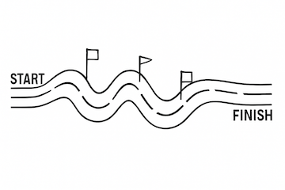
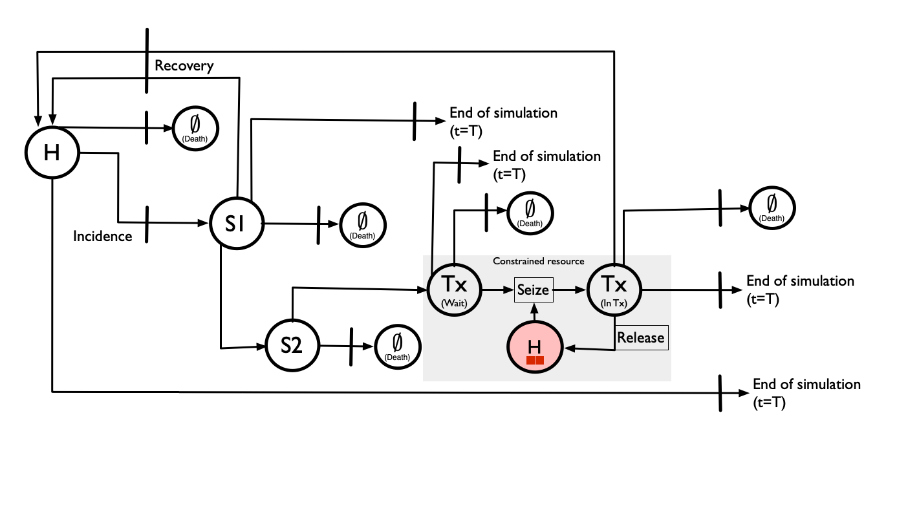
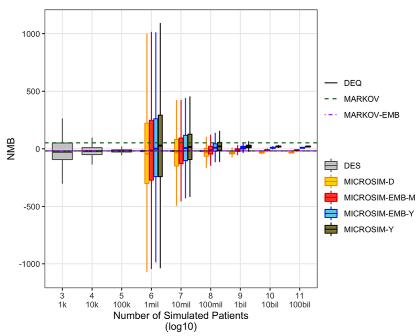

| simmer term | CEA reading |
|---|---|
| trajectory | one patient’s life history |
environment (env) |
the health system the patients move through |
| attribute | a patient’s current health state (0 = H, 1 = S1, 2 = S2) and flags |
event / timeout |
a transition firing after some sampled time |
resource (capacity = Inf) |
a costed counter — a tally we seize/release only to integrate time-in-state |
resource (capacity = c) |
a genuinely finite, contended resource patients must queue for |
| arrivals ledger | the per-patient, per-state record we value after the run |
Discrete-Event Simulation for Cost-Effectiveness Analysis with Resource Contention
A model-by-model build of the Sick-Sicker model, ending in two contention designs
Abstract
We build a discrete-event simulation (DES) of the Sick-Sicker cost-effectiveness model one idea at a time, then confront the problem DES is uniquely suited to and uniquely awkward at: a genuinely finite treatment resource that patients must queue for while their disease keeps progressing. We develop two faithful designs — an endogenous-wait registry event (A) and a claim-ticket companion (B) — and compare their tradeoffs.
NoteHow to read this document
This is a teaching build. Each section adds one idea to the model. The full, tested code for each step lives in a companion model-N.R file that we source() and run; inline we surface only the delta — the new or changed function — heavily commented. Design rationale and the verified simmer semantics behind the contention designs are in methodology.md; the section-by-section plan is in PLAN.md.
Orientation
This is the on-ramp, not the textbook. Before we build anything, we settle three things: how to read a discrete-event simulation (DES) if your native language is cost-effectiveness analysis (CEA), the two pictures we will lean on for the rest of the document, and the one capability that makes the whole exercise worth the trouble — contention. If a section here feels obvious, skip it; we return to each idea in code later.
Reading a DES as a CEA modeller
A DES is built out of a small handful of simmer nouns, and every one of them maps cleanly onto something you already think about. The translation is worth committing to memory, because the rest of the build is just these nouns acquiring detail.
The two resource rows are the fork in the road. For models 1 through 7 every “resource” is a counter with capacity = Inf: it can never be full, so seizing it is instantaneous and exists purely so we can measure how long each patient spent in health state 0 (H), 1 (S1), or 2 (S2) and attach costs and QALYs to that time. Nothing is ever contended. From model 8 onward we introduce a resource with a real, finite capacity c ≪ N — a fixed number of treatment slots — and now seizing it can fail, because someone else is already in the chair. That single change is what DES is for, and also where it bites back; the rest of Part II and the two designs that follow are about getting it right.
NoteThe vocabulary we reuse without re-explaining
Health states are 0-indexed numerics throughout: 0 = H (healthy), 1 = S1 (sick), 2 = S2 (sicker). A counter is a capacity = Inf resource used only for time-in-state costing — never for contention — unless we deliberately constrain it. When we do constrain one, we say so loudly.
The car race: an intuition for contention
Picture a stock-car race. Each driver is a patient; the track is the health system; laps completed are person-years lived. So far this is just a moving population — drivers lap independently and nothing ties one car’s fate to another’s.

Contention enters when a car needs the pit crew. There is one mechanic (or c mechanics), and a car that pulls in while the mechanic is busy with someone else must wait — losing laps, possibly crashing out — until a bay frees up. Waiting for a mechanic is exactly waiting for a treatment slot: the resource is finite, the queue is real, and crucially the race does not pause for the cars in line.
When demand for the bay outstrips supply, you get congestion — a pack of cars backed up behind a bottleneck, each one’s wait determined by how many are ahead of it. That endogenous wait — my delay depends on everyone else’s demand — is the thing a patient-by-patient model cannot fake, and the thing this whole document is built to capture faithfully.

Tip
The two pillars of intuition we reuse throughout: the car race (patients = drivers, waiting for a mechanic = waiting for a treatment slot) and the Petri net (places, transitions, tokens, arcs), introduced next.
The Petri-net visual grammar
When we need to draw a model rather than describe it, we use a Petri net. It has exactly four symbols, and we use them consistently from here to the end:
- Place — a labelled circle: a state a patient can occupy (H, S1, S2, or “in treatment”).
- Token — a filled dot sitting inside a place: one patient, here, now.
- Transition — a bar: an event that moves a token from one place to another (incidence, recovery, death, seizing a slot).
- Arc — an arrow connecting a place to a transition or back: who can flow where.

Contention has a precise Petri-net signature. A finite resource is a place with a limited number of token slots. When more patients want it than it can hold, the surplus tokens pile up outside the place — a visible queue waiting for the transition to fire. That picture is the difference between a counter and a contended resource, drawn:
Inf-capacity counter never fills, so it never produces this queue.
The full Sick-Sicker model with one constrained treatment resource is our target picture. Note the shaded “Constrained resource” box: a Seize transition gated by a finite-capacity treatment place, a Release arc returning the slot, and — the part that makes this hard — the disease transitions (death, progression, recovery, end-of-horizon) that must keep firing while a patient is in the queue. Everything between here and Part III is about reaching this diagram without breaking it.

Why DES, and not Markov or microsimulation
A cohort Markov model and a patient-level microsimulation can both reproduce the natural history of Sick-Sicker perfectly well — states, transitions, costs, QALYs. For models 1 through 7, DES buys us little a microsimulation would not. So why pay for DES at all? Two things only DES gives cleanly:
- Queues and contention. In a Markov or microsimulation model each patient’s transition probabilities are fixed in advance; one patient’s trajectory cannot depend on how many other patients are currently competing for a scarce resource. The endogenous wait of Figure 3 — my delay is a function of the whole population’s demand right now — is structurally outside what those frameworks express. It is exactly what DES exists to model.
- Exact event times. DES works in continuous time: every transition fires at a precise, sampled instant, not at a fixed cycle boundary. That removes cycle-length bias entirely (no half-cycle correction), and it is what lets a contended resource be enforced to the instant a slot frees rather than to the nearest cycle.
So the honest framing for the build ahead: models 1–7 use DES as a clean, exact-time microsimulation; the payoff that justifies the machinery only arrives at model 8, when a resource finally becomes finite.
The cost of DES: a bouncer at an empty venue
DES is not free. Its event-driven engine — sample every competing time, take the argmin, fire, reschedule — carries bookkeeping overhead that a vectorised cohort or microsimulation does not. Empirically, runtime grows roughly O(n log n) in the number of patients, and the constant is not small: the same Sick-Sicker model in simmer is orders of magnitude slower than a base-R or data.table implementation, with the gap widening sharply as N grows.

simmer’s event engine (blue) climbs steeply with N; base-R and data.table stay near the floor. DES is the bouncer you only need when there’s actually a queue.
The lesson is one of fit-for-purpose. Running simmer on the unconstrained natural history is like hiring a bouncer for an empty venue — paying for crowd control when there is no crowd to control. You bring in DES precisely when there is a queue: a genuinely finite resource that patients contend for. For everything before that, a cheaper engine would do; we use DES throughout only so that the single mechanism that does need it slots into machinery the reader already understands. (Practically, this also caps N: keep cohorts modest in this document and quote production-scale numbers in prose.)
NoteWhat we build, and in what order
Part I builds the cost-effectiveness model one idea per section — the engine (model 1), valuation as a separate pass (model 2), the first competing risk (model 3), the first disease state (model 4), recovery (model 5), the full ladder (model 6), and a comparator with the first ICER (model 7). Part II then makes a resource genuinely finite (model 8) and watches the naive approach break, before a gallery of tempting fixes that also fail. Parts III–IV develop and compare the two designs that work — the endogenous-wait registry event (A) and the claim-ticket companion (B). Each section adds exactly one new idea; we reference earlier ones rather than repeat them.
Part I — Building the cost-effectiveness model
Model 1 — the engine and the empty patient
Every later model reuses the same six-part contract — counters, initialize_patient(), cleanup_on_termination(), terminate_simulation(), an event_registry, and a des_run() wrapper. main_loop.R is the hand-rolled next-event engine (event_registry → next_event() = argmin of sampled times → branch |> rollback); we treat it as a black box and never edit it. At this stage simmer is only a timeout/tally engine: the time_in_model “resource” has capacity Inf and exists purely to record time-in-state for later costing — not to model contention. (That distinction is the whole setup for Approaches A and B.)
set.seed(1)
source("model-1.R") # defines the 6-part contract + a single trivial "Terminate at horizon" event
arrivals <- des_run(inputs)
head(arrivals)The single event in the registry is the trivial one:
# THE DELTA: the registry holds exactly one (deterministic) event so the engine can be seen in
# isolation before any clinical events exist.
event_registry <- list(
list(name = "Terminate at time horizon",
attr = "aTerminate",
time_to_event = function(inputs) inputs$horizon - now(env),
func = terminate_simulation,
reactive = FALSE)
)
WarningThe
function()-callback gotcha
set_attribute("AgeInitial", sample(20:30, 1)) samples once at build time (all patients get the same value); set_attribute("AgeInitial", function() sample(20:30, 1)) samples per patient. The same rule governs per-patient wait and treatment-effect durations later — wrap them in function().
Model 2 — valuation as a separate pass (costs, QALYs, discounting)
Objective: put numbers on the run. Model 1 ended with an arrivals ledger — one row per patient per resource, recording when each patient seized and released time_in_model. That ledger is the only thing a DES run produces. It says nothing yet about money or quality of life. Model 2 adds the idea that turns a ledger into a cost-effectiveness result, and it is deliberately a small idea: valuation is a separate pass over the ledger, not part of the run.
Nothing in the engine changes. We do not touch main_loop.R, the event_registry still holds only the trivial terminate-at-horizon event, and patients still do nothing but exist for 30 years. The only new code is two functions — cost_arrivals() and qaly_arrivals() — that take the finished ledger and append columns to it. des_run() simply pipes its result through them on the way out.
set.seed(1)
source("model-2.R") # same 6-part contract as Model 1, plus cost_arrivals() + qaly_arrivals()
arrivals <- des_run(inputs) # N = 5 patients, horizon = 30 years
head(arrivals)The ledger now carries four new columns. cost and dcost are undiscounted and discounted cost; qaly and dqaly are undiscounted and discounted quality-adjusted life-years. Costs are still zero — there are no costed events yet, so cost_arrivals() is a placeholder that writes 0. But the QALY columns are already meaningful: with nobody dying and everybody healthy, each patient accrues one QALY per year of time-in-model. Their undiscounted qaly is therefore end_time - start_time = 30, and their discounted dqaly is 19.893.
Two things are worth pausing on. First, the QALY total is computed from the ledger, by subtracting the seize time of time_in_model from its release time — exactly the time-in-state accounting the capacity-Inf counter was built to support in Model 1. Second, because valuation is a pure function of the ledger, it is re-derivable at any time: change a cost in inputs.R, or change the discount rate, and you re-value the same run rather than re-simulating it. That separation is what lets later models keep one expensive stochastic run and value it under several costing assumptions cheaply.
The delta: two valuation functions
The whole of Model 2’s new code is below. qaly_arrivals() is the part with content; cost_arrivals() is its still-empty twin, present so the shape is in place for Model 3 onward.
# THE DELTA: valuation runs AFTER the simulation, over the arrivals ledger.
# des_run() ends with: get_mon_arrivals(env, per_resource = TRUE) |> cost_arrivals(inputs) |> qaly_arrivals(inputs)
cost_arrivals <- function(arrivals, inputs)
{
arrivals$cost <- 0 # No costed events yet — placeholder.
arrivals$dcost <- 0 # (discounted) likewise.
arrivals
}
qaly_arrivals <- function(arrivals, inputs)
{
arrivals$qaly <- 0
arrivals$dqaly <- 0
# One QALY per year spent in the model. Select the time_in_model rows...
selector <- arrivals$resource == 'time_in_model'
# ...undiscounted QALYs = elapsed time in that resource (release - seize):
arrivals$qaly[selector] <- arrivals$end_time[selector] - arrivals$start_time[selector]
# ...discounted QALYs = the analytic integral of a discounted unit rate
# over [start_time, end_time]; see discount_value() below.
arrivals$dqaly[selector] <- discount_value(1, arrivals$start_time[selector],
arrivals$end_time[selector])
arrivals
}The pattern to carry forward: every future state contributes its rows to this same selector-and-fill idiom. Add a state, and you add (i) a cost/dcost line and (ii) a qaly/dqaly line that selects that state’s rows and values the time spent there. Nothing about how the run unfolds is touched; only what we read off it afterwards.
NoteContinuous discounting, and why the integral form
A health-economic convention discounts future value continuously rather than once at the end of each year. discount.R’s discount_value() does both jobs from one formula. Called with a single time point it returns a discounted point value; called with two it returns the area under the discounted curve between them — which is what we want for a QALY rate accruing over an interval.
It first converts the annual rate to a continuous rate, \(r = -\log(1 + 0.03)\), then integrates a constant unit rate:
\[ \int_{t_A}^{t_B} e^{r t}\,dt \;=\; \frac{e^{r t_B} - e^{r t_A}}{r}. \]
This closed form is used deliberately in place of the naive value / (1 + rate)^t: subtracting two exponentials is numerically stable across long horizons, where repeated powering drifts. A few values, all reproducible:
discount_value(1, 0)\(= 1\) — a unit at time zero is undiscounted.discount_value(1, 30)\(\approx 0.412\) — a unit thirty years out is worth about 41p of a present unit.discount_value(1, 0, 1)\(\approx 0.985\) — one QALY accrued continuously over the first year is worth slightly more than the naive end-of-year figure \(1/1.03 \approx 0.971\), because some of it accrues early when discounting bites less.discount_value(1, 0, 30)\(= 19.893\) — which is exactly thedqalyprinted in the ledger above. The loop closes: the discounted lifetime QALY for a patient alive over \([0, 30]\) is the same integral, computed the same way.
Model 3 — the first competing risk (Death)
Objective: give the patient a way to leave before the horizon. Until now the registry held a single, deterministic event — “terminate at the horizon” — so next_event() had nothing to choose between: every patient ran the full 30 years. We now add a second registry entry, a random death time, and that one addition is what first switches the engine on. With two events in play, next_event() becomes a genuine argmin: it samples a death time, compares it against the remaining time to the horizon, and the earlier of the two wins.
This is the first true competing risk. In Petri-net terms, the healthy place now has two transition bars draining it — one to the empty place ∅ (death), one to the end of the simulation — and the patient’s token fires through whichever bar comes up first.

The event-per-file pattern
Each clinical event lives in its own small file that defines two functions: a time_to_event (when, in years, might this happen) and a func (what to do to the trajectory if it does). Here that file is event_death.R, and the registry entry simply names the pair. Sourcing model-3.R pulls it in and appends the entry to event_registry.
set.seed(3)
source("model-3.R") # adds Death to the event registry
arrivals <- des_run(modifyList(inputs, list(N = 1000)))
# A "death" row now appears in the ledger, alongside time_in_model:
arrivals |> count(resource)
# Some patients leave before the 30-year horizon -- their time_in_model truncates:
arrivals |>
filter(resource == "time_in_model") |>
summarise(n = n(),
died_early = sum(end_time < 30 - 1e-6),
max_end = max(end_time))Two things have changed in the ledger. First, a new death resource appears — these are the patients who hit the death transition, each marked exactly once. Second, for those patients time_in_model no longer runs the full horizon: it end_times at the moment of death. Survivors still cap at 30. (At a production N the early-death fraction settles near 14%, consistent with the secular rate r.HD = 0.005 compounded over 30 years.)
The delta: event_death.R
The new file is short. Note the two pieces — a draw and a force-terminate.
# THE DELTA: a self-contained event. A draw for *when*, a handler for *what*.
# When would this patient die a secular death? A single exponential draw.
# (A deliberately crude mortality model -- it is the H->D reference rate the
# sicker states will later scale up via hazard ratios.)
years_till_death <- function(inputs)
{
rexp(1, inputs$r.HD)
}
# What happens if Death wins the argmin? Mark the counter and force-terminate.
death <- function(traj, inputs)
{
traj |> branch(
function() 1, # always take arm 1 -- this is not a real choice
continue = c(FALSE), # ...and do NOT continue the parent trajectory
trajectory("Death") |>
mark("death") |> # tally the death (must be listed in `counters`)
terminate_simulation() # release time_in_model and end the patient
)
}And the one-line registry addition that activates the competition:
# The second entry. Now next_event() has two candidate times to compare.
event_registry <- list(
list(name = "Terminate at time horizon",
attr = "aTerminate",
time_to_event = function(inputs) inputs$horizon - now(env),
func = terminate_simulation,
reactive = FALSE),
list(name = "Death", # <- NEW
attr = "aDeath",
time_to_event = years_till_death,
func = death,
reactive = FALSE)
)
NoteThe
branch(continue = FALSE) force-terminate idiom
Killing a patient is the one place we use branch() for something other than branching. The selector function() 1 always picks the single sub-trajectory, so this is not a real fork — it is a syntactic trick. The work is done by continue = FALSE, which tells simmer not to resume the parent trajectory after the sub-trajectory finishes. Without it, the patient would tally a death and then sail on through the rest of their event loop. The sub-trajectory itself just mark()s the death counter (which must appear in counters, exactly as time_in_model does) and calls terminate_simulation() to release the held counter cleanly. You will see this same branch(continue = FALSE) pattern every time a patient leaves the model for good.
With a real competing risk in place, next_event()’s argmin is finally earning its keep. The next model adds the first disease state, so that the set of candidate events — and the death hazard itself — depends on where the patient currently sits.
Model 4 — the first disease state, and reactive events
Objective: give the patient a place to be other than healthy or dead. Until now a patient was a token sitting in healthy until either the horizon or Death pulled them out. We now add the first disease state, S1 (mildly sick), and with it the first thing that makes a microsimulation feel alive: a hazard that changes when the patient’s state changes. That is what reactive = TRUE is for.
We continue to track state with the State attribute, 0-indexed: 0 = H (healthy), 1 = S1. (Model 6 adds 2 = S2.) The patient now has two competing risks racing at all times — Death and onset of S1 — plus the ever-present horizon. next_event() takes the argmin, exactly as before; nothing in main_loop.R changes.

The four moving parts
1. The new state, as an attribute and as a counter. Becoming sick is a transition that flips the State attribute from 0 to 1, releases the healthy counter, and seizes the sick1 counter. The counter swap is what later lets the valuation pass integrate time-in-state (Model 2’s machinery, unchanged): every patient leaves one row per state they occupied.
# THE DELTA (event_sick1.R): onset is only possible from Healthy. From any other
# state we return a time past the horizon, which disables the transition.
years_till_sick1 <- function(inputs)
{
state <- get_attribute(env, "State")
if (state == 0) # 0 => Healthy: onset can happen
rexp(1, inputs$r.HS1) # draw an onset time at rate r.HS1
else
inputs$horizon + 1 # already sick (or worse): never fires
}
sick1 <- function(traj, inputs)
{
traj |>
set_attribute("State", 1) |> # 1 => S1; the state flip is the whole point
release("healthy") |> # stop accruing the H tally...
seize("sick1") # ...start accruing the S1 tally
}2. A state-dependent death hazard. This is the clinically important part: sick patients die faster. The death event now reads the patient’s state and multiplies the base rate by the S1 hazard ratio, hr.S1D.
# THE DELTA (event_death2.R): death rate now depends on state.
years_till_death <- function(inputs)
{
state <- get_attribute(env, "State")
rate <- inputs$r.HD # base healthy mortality
if (state == 1) rate <- rate * inputs$hr.S1D # in S1, die hr.S1D times faster
rexp(1, rate)
}3. reactive = TRUE — the part that makes (2) work. A hazard that depends on state is useless unless we resample it the moment the state changes. Consider a patient who, while healthy, drew a death time of (say) 40 years — comfortably past the horizon, so harmless. Then they become sick at year 7. Their mortality rate has just tripled, but that stale 40-year draw is still sitting in the aDeath attribute. If we did nothing, the patient would carry their healthy death time into a sick body.
Marking an event reactive = TRUE in the registry tells the engine to throw away and re-draw that event’s time after every transition. The mechanism lives in main_loop.R’s process_events() (we do not edit it) — at the tail of each event it re-runs time_to_event() for every reactive event:
# main_loop.R, inside process_events() — runs after every event fires:
lapply(event_registry[sapply(event_registry, function(x) x$reactive)],
FUN = function(e) {
traj <- set_attribute(traj, e$attr,
function() { now(env) + e$time_to_event(inputs) }) # re-draw from NOW
})Both Death and Sick1 are reactive = TRUE; only the horizon (which never depends on state) stays reactive = FALSE. The rule of thumb: if a time_to_event() reads State, its event must be reactive.
WarningReactive resampling is a memoryless-only convenience
Re-drawing the time from scratch at the transition is correct because the underlying clocks are exponential — rexp is memoryless, so a fresh draw from “now” is distributionally identical to having conditioned the original draw on survival to now. If you ever swap a rexp for a Weibull or a Gompertz, this shortcut silently introduces a bug: you would need to carry the elapsed time and condition on it, not re-draw afresh. Every clock in this build stays exponential precisely so that reactivity stays this cheap.
4. Per-state costs and utilities. With two live states the valuation pass finally has something to discriminate. We extend cost_arrivals()/qaly_arrivals() with a selector for the new sick1 rows, billing them at c.S1 / u.S1 instead of c.H / u.H:
# THE DELTA: one more selector block per costed state (cost_arrivals / qaly_arrivals).
selector <- arrivals$resource == 'sick1'
arrivals$cost[selector] <- inputs$c.S1 *
(arrivals$end_time[selector] - arrivals$start_time[selector])
arrivals$qaly[selector] <- inputs$u.S1 *
(arrivals$end_time[selector] - arrivals$start_time[selector])
# (dcost / dqaly use discount_value() over the same interval, as in Model 2.)Run it
Sourcing model-4.R re-source()s the inputs and the engine, then redefines des_run() — so it cleanly replaces Model 3. We run a modest cohort and tally the rows by state. Every patient contributes one time_in_model row and one healthy row; the ~95% who fall sick add a sick1 row; the third or so who die before the horizon add a death row.
set.seed(8)
source("model-4.R") # adds the State attribute, the reactive Sick1 event, and per-state cost/QALY
arrivals <- des_run(modifyList(inputs, list(N = 200)))
arrivals |>
count(resource) |>
knitr::kable(col.names = c("resource (state tally)", "rows"),
caption = "One row per state occupied: 200 patients, 190 fell sick, 65 died before the horizon.")| resource (state tally) | rows |
|---|---|
| death | 65 |
| healthy | 200 |
| sick1 | 190 |
| time_in_model | 200 |
The random-audit idiom
A cohort summary tells you the model ran; it does not tell you the model is right. The single most useful validation habit in this whole build is to pick one patient at random, sort their rows by time, and read their life story off the ledger — checking that the chronology, the state sequence, and the per-state bills all make sense. We use this idiom in every model from here on.
set.seed(16)
one <- sample(unique(arrivals$name), 1) # random-audit: one patient, picked blind
arrivals |>
filter(name == one) |>
arrange(start_time, end_time) |> # read it top-to-bottom as a timeline
select(resource, start_time, end_time, cost, qaly) |>
knitr::kable(digits = 2, caption = paste("Audited life story:", one))| resource | start_time | end_time | cost | qaly |
|---|---|---|---|---|
| healthy | 0.0 | 7.1 | 14190.49 | 7.10 |
| time_in_model | 0.0 | 26.7 | 0.00 | 0.00 |
| sick1 | 7.1 | 26.7 | 78438.90 | 15.69 |
| death | 26.7 | 26.7 | 0.00 | 0.00 |
Read it as a sentence. patient191 is healthy from year 0 to year 7.1 (one healthy row, costing c.H × 7.1 ≈ 14,190, accruing 7.10 QALYs at u.H = 1.0). Onset of S1 fires at 7.1; from there to year 26.7 they are sick (one sick1 row, billed at c.S1 = 4000 over 19.6 years ≈ 78,439, accruing 19.6 × u.S1 = 15.69 QALYs). At 26.7 the (tripled, post-onset) death hazard finally wins, before the 30-year horizon. The time_in_model row spans the whole life, 0 to 26.7 — a free cross-check that the state rows tile the lifetime with no gaps and no overlap.
Three things to verify on every audit, all of which hold here:
- Chronology is contiguous. Each state’s
end_timeis the next state’sstart_time; there are no gaps (uncounted time) and no overlaps (double-counted time). Thetime_in_modelspan equals the lifetime. - The state sequence is legal.
healthy → sick1 → deathis a path the registry actually permits. A patient showingsick1beforehealthy, or acoston adeath/time_in_modelrow, would betray a wiring bug. - The per-state bills match the parameters. A
sick1row atc.S1notc.H; a QALY equal to duration × the right utility weight. Here the S1 QALYs (15.69) are visibly less than the S1 duration (19.6 years) — exactly theu.S1= 0.80 penalty for being sick.
Tip
The arrange(start_time, end_time) tie-break is why time_in_model (which also starts at 0) sorts after healthy: both begin at time 0, and the tie is broken by end_time. Sorting on the start time alone leaves zero-width events (death, fired at a single instant) and equal-start rows in an arbitrary order — sort on both, and the timeline reads cleanly every time.
With one disease state and a reactive, state-dependent death hazard in place, the model is a genuine two-state microsimulation. The next two steps make it a recurrent one — recovery back to health (Model 5), then progression onward to Sicker (Model 6) — but the audit idiom you just learned is the tool you will reach for to confirm each of them behaves.
Model 5 — recurrence (recovery S1 → H)
Objective: add a single reactive event so that being sick is no longer a one-way trip. Until now the disease has run downhill only — a healthy patient could fall sick (Model 4), but once in S1 the only exits were death or the horizon. Real disease histories are rarely so tidy: people get better, relapse, and get better again. We make recovery a first-class transition, S1 → H, and in doing so turn the one-way cascade into a recurrent, bidirectional loop between the two states.
Mechanically this is one more registry entry. The work we did in Model 4 — the State attribute, reactive resampling, per-state hazards and costing — already gives us everything we need to receive a returning patient. So this section is short by design: the engine does not change, only the registry grows.

The delta: a fourth (reactive) registry entry
Recovery needs the same two pieces every clinical event has had since Model 3: a time_to_event() that samples when the patient would recover, and a func() that updates the patient when recovery fires. The new file event_healthy.R supplies both, and model-5.R adds them as the fourth event in the registry. Nothing else moves.
# THE DELTA (event_healthy.R): the mirror image of years_till_sick1().
# Recovery is only possible *from* S1, so the time_to_event is STATE-GATED:
# if the patient is not in S1, we return a time past the horizon, which makes
# this transition effectively unreachable from any other state.
years_till_healthy <- function(inputs)
{
state <- get_attribute(env, "State")
if (state == 1) { # 1 => S1: recovery is on the table
rexp(1, inputs$r.S1H) # sample a recovery time at the S1 -> H rate
} else {
inputs$horizon + 1 # not in S1: return a time the engine will never pick
}
}
# When recovery fires, flip the patient back to Healthy and move the costing
# token: release the 'sick1' counter, seize 'healthy'. (Same accounting move as
# sick1(), run in reverse.)
healthy <- function(traj, inputs)
{
traj |>
set_attribute("State", 0) |> # 0 => H
seize('healthy') |>
release('sick1')
}
# ...and in model-5.R the registry gains its fourth, reactive entry:
event_registry <- list(
# ... Terminate, Death, Sick1 as before ...
list(name = "Healthy",
attr = "aHealthy",
time_to_event = years_till_healthy,
func = healthy,
reactive = TRUE) # resample on every state change, like its siblings
)
NoteThe state-gated
time_to_event idiom (return horizon + 1)
This is the pattern that lets one flat registry describe a state machine. Every reactive event is always in the registry, but each one disables itself when the current state cannot take that transition by returning a time past the horizon (inputs$horizon + 1). Because next_event() is the argmin over all sampled times, an event scheduled past the horizon can never win — the horizon-termination event will always fire first — so the transition is silently switched off. years_till_sick1() gates on state == 0 (you can only fall sick from H); years_till_healthy() gates on state == 1 (you can only recover from S1). The two are mirror images. As we add states in Model 6, the same trick keeps each transition wired to exactly the states it is legal from — no separate per-state registries, just guarded draws.
Note the reactive = TRUE flag. The same Model 4 machinery that resamples a patient’s death time when their hazard changes also resamples their recovery time the instant they enter S1: until then years_till_healthy() was returning horizon + 1 (recovery off), and the moment sick1() sets State to 1 the reactive pass redraws it as a live rexp(1, r.S1H) (recovery on). The competing risks now race both ways.
Run it, and audit a patient who bounces
A one-way cascade is hard to see in a ledger — every patient’s healthy/sick1 history is monotone. A recurrent loop is unmistakable: a single patient visits the healthy counter, then sick1, then healthy again. We borrow the random-audit idiom from Model 4 — run the model, pick one patient, order their ledger by time — but now we deliberately select a patient who recovered, i.e. one with more than one healthy spell.
set.seed(8)
source("model-5.R") # re-sources inputs.R + main_loop.R, redefines des_run; adds the Healthy event
arrivals <- des_run(modifyList(inputs, list(N = 200)))
# A patient who recovers visits the 'healthy' counter more than once.
# Pick one with exactly three healthy spells: enough bounces to see the loop,
# few enough to read at a glance.
spells <- arrivals |>
dplyr::filter(resource == "healthy") |>
dplyr::count(name, name = "healthy_spells") |>
dplyr::filter(healthy_spells == 3)
who <- spells$name[1]
cat("Auditing:", who, "\n")
## Auditing: patient100
# Order this patient's state history by time: the H <-> S1 alternation is the recurrence.
arrivals |>
dplyr::filter(name == who, resource %in% c("healthy", "sick1")) |>
dplyr::arrange(start_time) |>
dplyr::transmute(state = ifelse(resource == "healthy", "H", "S1"),
start = round(start_time, 2),
end = round(end_time, 2),
years = round(end_time - start_time, 2)) |>
print(row.names = FALSE)
## state start end years
## H 0.00 0.43 0.43
## S1 0.43 1.88 1.45
## H 1.88 27.48 25.60
## S1 27.48 27.62 0.15
## H 27.62 29.90 2.28
## S1 29.90 30.00 0.10Read the state column top to bottom: H → S1 → H → S1 → H → S1. This patient falls sick early, recovers within about a year and a half, then stays well for over two decades before a brief relapse-and-recover near the end of the horizon. The contiguous start/end times confirm the costing token is being handed off cleanly at each transition — release('sick1') exactly when seize('healthy') happens, so no overlap and no gap, and the per-state cost and QALY selectors from Model 4 will bill each spell at the right rate with no further change. The loop closes; the patient genuinely moves both ways.
TipA quick sanity reflex
Recurrence is also a good moment to glance at the population, not just one patient. Because recovery (r.S1H = 0.7/yr) is much faster than onset (r.HS1 = 0.15/yr), most person-time should still be spent in H — patients dip into S1 and bounce back. If a run ever showed patients accumulating in S1, that would be the tell-tale sign of a mis-gated time_to_event (recovery left disabled). The single-patient audit above is the fastest way to catch it.
With H ↔︎ S1 now a working two-state loop, Model 6 extends the same pattern one rung further down the ladder — adding Sicker (S2) below S1 — and distils the moves we just made into a reusable checklist for introducing any new state.
Model 6 — the full ladder (Sicker / S2)
Objective: add the second disease state — Sicker (S2, numeric state 2) — and, in doing so, discover that the model has stopped growing in kind. Everything new in Model 6 is a copy of a pattern we already have. The disease ladder is now complete (H → S1 → S2), and the rest of the build will reuse, not extend, the machinery assembled so far.
By now the shape of “adding a state” should feel familiar: Model 4 introduced S1 and the reactive resampling that makes the engine notice a changed hazard; Model 5 added the recovery arc S1 → H and the state-gating idiom (return horizon + 1 to switch a transition off). Adding S2 asks nothing new of you. It is purely additive — five small, mechanical edits, each in a place we have touched before.
TipThe 5-place checklist for adding a state
Whenever you add a state to one of these models, you touch exactly five places. Nothing else.
- A new event file — the
years_till_*()time-to-event sampler (state-gated) plus the*()transition that flips theStateattribute and swaps the costing counter. Here:event_sick2.R. - A registry entry — one
list(...)inevent_registry,reactive = TRUE, pointing the engine at the new sampler and transition. - A counter — one string in the
countersvector, so theInf-capacity resource exists to tally time-in-state for costing. - A cost/QALY selector — one
selector <- arrivals$resource == 'sick2'block in each ofcost_arrivals()andqaly_arrivals(), applyingc.S2/u.S2. - A cleanup branch arm — one more arm in
cleanup_on_termination()’sbranch()so a patient who dies (or hits the horizon) while inS2releases the right counter.
If you find yourself editing main_loop.R to add a state, stop: you have left the additive path.
Walking the checklist for S2: model-6.R swaps in source('event_sick2.R') (item 1) and the matching list(name = "Sick2", ...) registry entry (item 2); the counters vector gains "sick2" (item 3); both valuation passes gain a 'sick2' selector keyed to c.S2 / u.S2 (item 4); and the cleanup branch() gains its third arm, trajectory() |> release("sick2") (item 5). The Petri-net picture is just Model 5’s with one more place and one more transition arc bolted on the far end.
H ↔︎ S1 from Model 5 is unchanged; we have added one place (S2) and the one-way progression arc S1 → S2. Death (not drawn) competes from every place.Run it
Sourcing model-6.R cleanly replaces the Model 5 definitions. The visible payoff is a fifth state-resource in the ledger — sick2 — which simply was not reachable before.
set.seed(6)
source("model-6.R") # the full ladder: adds the Sicker (S2) state
arrivals <- des_run(modifyList(inputs, list(N = 200)))
# The ledger now carries a fifth state-resource, 'sick2':
sort(unique(arrivals$resource))
## [1] "death" "healthy" "sick1" "sick2"
## [5] "time_in_model"The delta: event_sick2.R
The new event file is a near-verbatim cousin of event_sick1.R. The sampler fires only out of S1 (state 1); the transition flips State to 2, releases the sick1 counter, and seizes sick2. There is no recovery arc out of S2 in this model — once Sicker, a patient stays Sicker until death or the horizon — so there is no S2 → S1 or S2 → H event to write.
# THE DELTA (event_sick2.R): identical in shape to event_sick1.R, one rung up the ladder.
# State-gated sampler: a draw to S2 is only meaningful while in S1.
years_till_sick2 <- function(inputs)
{
state <- get_attribute(env, "State")
if (state == 1) # 1 => Sick1: progression is possible
{
rexp(1, inputs$r.S1S2) # competing-risk draw, rate r.S1S2 per year
} else
{
inputs$horizon + 1 # any other state: disable this transition
}
}
# Transition: flip the state, swap the costing counter (sick1 -> sick2).
sick2 <- function(traj, inputs)
{
traj |>
set_attribute("State", 2) |> # 2 => Sicker (S2)
release('sick1') |> # stop tallying S1 time...
seize('sick2') # ...start tallying S2 time
}The compounding death hazard
There is one substantive change hiding in the additive work, and it lives in the death sampler, not in event_sick2.R. Model 6 pairs with event_death3.R (not the event_death2.R of Model 5): the only edit is a third line in the state-dependent rate.
# THE DELTA (event_death3.R): one new line for the S2 hazard ratio.
years_till_death <- function(inputs)
{
state <- get_attribute(env, "State")
rate <- inputs$r.HD
if (state == 1) rate <- rate * inputs$hr.S1D # Model 4: S1 raises the hazard
if (state == 2) rate <- rate * inputs$hr.S2D # NEW: S2 raises it much further
rexp(1, rate)
}With hr.S1D = 3 and hr.S2D = 10, the per-year death rate climbs from r.HD = 0.005 in H, to 0.015 in S1, to 0.05 in S2 — a tenfold gap between the ends of the ladder. Because Death is a reactive = TRUE event, the engine resamples years_till_death the instant a patient enters S2, so the steeper hazard takes effect immediately rather than at the next scheduled draw. This is the engine quietly earning its keep: the hand-rolled resampling logic from Model 4 is what makes a compounding hazard correct here, with no extra code in the death event itself.
Audit a patient who reaches S2
The random-audit idiom from Model 4 transfers unchanged — sample one patient, order their rows by time, and read the trajectory. We filter to a patient who actually climbed to S2 so the new rung is exercised.
# Re-run under the SAME seed so the audit lands on a known patient.
set.seed(6)
source("model-6.R")
arrivals <- des_run(modifyList(inputs, list(N = 200)))
# Pick one patient who climbed all the way to S2, then read their history in order.
set.seed(11)
who <- arrivals |>
dplyr::filter(resource == "sick2") |>
dplyr::distinct(name) |>
dplyr::slice_sample(n = 1) |>
dplyr::pull(name)
arrivals |>
dplyr::filter(name == who, resource != "time_in_model") |>
dplyr::arrange(start_time) |>
dplyr::transmute(resource,
start_time = round(start_time, 1),
end_time = round(end_time, 1),
cost = round(cost)) |>
knitr::kable(caption = paste("State history for", who))| resource | start_time | end_time | cost |
|---|---|---|---|
| healthy | 0.0 | 8.2 | 16314 |
| sick1 | 8.2 | 9.9 | 6982 |
| healthy | 9.9 | 10.2 | 563 |
| sick1 | 10.2 | 11.2 | 3893 |
| healthy | 11.2 | 16.4 | 10510 |
| sick1 | 16.4 | 18.0 | 6426 |
| healthy | 18.0 | 23.6 | 11141 |
| sick1 | 23.6 | 23.6 | 89 |
| sick2 | 23.6 | 30.0 | 95832 |
Read top to bottom, this is the whole curriculum so far in one patient. The H ↔︎ S1 rows are Model 5’s recovery loop firing several times. The final two rows are new: the patient enters S2 and — with no recovery arc and a tenfold death hazard — does not leave it before the horizon at year 30. The lone high-cost sick2 row (here at c.S2 = 15000/year) is exactly the kind of expensive tail the Sick-Sicker model exists to price, and it is the cohort that the finite-treatment-resource question in Part II will put under pressure.
NoteWhy this is the last “add a state” section
Models 4–6 were three turns of one crank: state attribute, reactive resampling, state-gated samplers, per-state costing, cleanup arm. The ladder H → S1 → S2 is now complete and validated patient-by-patient. From here the build changes character — Model 7 adds a comparator (and the first ICER), and Part II replaces an Inf-capacity counter with a genuinely finite one. No new disease states are coming; the machinery is done.
Model 7 — a comparator, and the first ICER
Objective: turn the natural-history model into a comparative one. Up to now every model has described a single world. Cost-effectiveness analysis needs two: a world with the intervention and a world without it, run under the same rules, so the difference between them is the intervention’s effect and nothing else. This is the pivot from describing disease to evaluating a decision.
Two small ideas carry the whole section.
First, a strategy is just a flag. The default inputs already carries strategy = 'notreat'. We read it once, at birth, into a patient attribute:
set_attribute("Treat", function() inputs$strategy == 'treat')Wrapped in function() (the model-1 gotcha), so the flag is resolved per patient rather than once at build time. From then on the patient carries its assignment, and every event handler can branch on it. To run the other arm we change one value in the inputs list — nothing in the engine, the registry, or the event files moves.
Second, a treatment is just a resource. We have used capacity = Inf “counters” all along to integrate time-in-state for costing. A treatment is the same device pointed at a clinical question: a treat counter that a treated patient holds for exactly as long as the treatment applies — here, the whole S1 stay. Holding it does two things. It accrues the treatment’s annual cost c.Trt over the held interval, exactly as healthy/sick1/sick2 accrue their state costs. And it marks the patient as treated so valuation can apply the improved S1 utility u.Trt (0.95) in place of the untreated u.S1 (0.80). Recovery to H or progression to S2 releases the slot; cleanup releases it at the horizon. Because it is capacity = Inf, every treated patient gets it immediately — there is no contention yet. That is the whole point of Part II, and the reason Model 8 exists.
The delta over Model 6 is small and lives in four places: the new treat counter, the Treat attribute set at birth, a seize/release branch wherever the patient enters or leaves S1, and the cost/QALY selectors that read c.Trt and swap in u.Trt.
#| label: model-7-delta
#| eval: false
# THE DELTA, part 1 — entering S1 (event_sick1-v2.R): a treated patient seizes 'treat'.
sick1 <- function(traj, inputs)
{
traj |>
set_attribute("State", 1) |> # 1 => Sick 1 (S1)
release('healthy') |>
seize('sick1') |>
branch(
function() get_attribute(env, "Treat") + 1, # FALSE->1 (no treat), TRUE->2 (treat)
continue = rep(TRUE, 2),
trajectory(), # arm 1: untreated, do nothing
trajectory() |> seize('treat') # arm 2: hold a treatment slot while in S1
)
}
# (Symmetrically, recovery to H and cleanup_on_termination release('treat') for treated
# patients — every seize is matched by exactly one release, or the ledger leaks.)
# THE DELTA, part 2 — valuation reads the treated world (qaly_arrivals in model-7.R):
# the S1 utility depends on the strategy, so the SAME 'sick1' rows are valued differently
# in the two arms — this is where the treatment EFFECT enters the QALYs.
uS1 <- if (inputs$strategy == 'treat') inputs$u.Trt else inputs$u.S1 # 0.95 vs 0.80
# ...and cost_arrivals gains a 'treat' selector that bills c.Trt over each held interval.With both arms expressible as one flag, the comparison is mechanical: run each, collapse the arrivals ledger to per-patient discounted totals, average over patients, and difference the two arms. One detail is worth stating plainly, because it changes the answer: we seed the two arms identically before each run (common random numbers). That gives every patient the same birth age and the same sequence of event draws in both worlds, so the difference between arms is the treatment effect rather than Monte-Carlo noise. With independent seeds the incremental QALY at this N is small relative to its sampling error and can even come out the wrong sign; with paired seeds it is stable.
set.seed(7)
source("model-7.R") # adds: Treat attribute, 'treat' counter, treatment cost + S1 utility effect
# Run one arm: flip the single 'strategy' flag, aggregate the ledger to per-patient
# discounted totals, return the mean cost and QALY across patients.
run_arm <- function(strategy, N = 2000) {
des_run(modifyList(inputs, list(strategy = strategy, N = N))) |>
group_by(name) |> # one group per patient
summarise(cost = sum(dcost), qaly = sum(dqaly), .groups = "drop") |>
summarise(cost = mean(cost), qaly = mean(qaly)) # mean over patients
}
# Common random numbers: seed each arm IDENTICALLY so the two strategies face the
# same birth ages and event draws. The difference is then the effect, not noise.
set.seed(7); notreat <- run_arm("notreat")
set.seed(7); treat <- run_arm("treat")
dcost <- treat$cost - notreat$cost
dqaly <- treat$qaly - notreat$qaly
icer <- dcost / dqaly
nmb <- inputs$wtp * dqaly - dcost # net monetary benefit (> 0 favours treat)
nhb <- dqaly - dcost / inputs$wtp # net health benefit (> 0 favours treat)
cea <- data.frame(
Strategy = c("No treatment", "Treatment", "Incremental"),
Cost = round(c(notreat$cost, treat$cost, dcost)),
QALYs = round(c(notreat$qaly, treat$qaly, dqaly), 3)
)
knitr::kable(
cea, align = "lrr", format.args = list(big.mark = ","),
caption = "Two-arm cost-effectiveness summary (N = 2000, discounted, paired seeds)."
)| Strategy | Cost | QALYs |
|---|---|---|
| No treatment | 66,281 | 16.427 |
| Treatment | 117,930 | 16.769 |
| Incremental | 51,650 | 0.342 |
## ICER = 151,141 per QALY NMB = -17,477 NHB = -0.175Read the three summary numbers together. The ICER (incremental cost ÷ incremental QALY) is about £/$151,000 per QALY: treatment buys health, but at a price above the £/\(100,000 willingness-to-pay threshold in `inputs\)wtp. The **net monetary benefit** (wtp × dqaly − dcost) and **net health benefit** (dqaly − dcost/wtp`) both come out negative, which is the same verdict stated two other ways — at this threshold the QALYs gained are not worth their cost. NMB and NHB are often more convenient than the ICER itself: they are well-behaved when an increment is near zero or negative (where the ICER ratio becomes uninterpretable), and they extend cleanly to more than two strategies. The ICER’s sign and magnitude here are not a recommendation about this drug; they are a demonstration that the machinery now produces the decision-relevant quantity.
TipWhy pair the seeds across arms
Both arms share one engine, so seeding them identically is the discrete-event analogue of running the same simulated patients through both worlds — a paired comparison rather than two independent samples. The within-pair difference cancels the large between-patient variation, leaving a far tighter estimate of the increment. It is the single cheapest variance reduction available here, and it is why a modest N already gives a stable sign. Quote production-N estimates from a larger run; use this paired-seed pattern at any N.
NoteTreatment is held for the S1 stay — match every seize with a release
The treat rows in the ledger number exactly as many as the sick1 rows: a treated patient holds the slot for precisely each S1 episode and lets it go on recovery, progression, or termination. That one-to-one matching is what keeps the resource ledger honest — an unmatched seize would leak and silently inflate treatment cost. Hold this invariant in mind: in Model 8 the same seize becomes finite-capacity and blocking, and the way simmer enforces a queue there is exactly what breaks the model.
Part II — The contention problem
Model 8 — a finite resource, and the freeze trap
Objective: turn the treatment resource from an infinite-capacity counter into a genuinely finite one — only
n.capacitypatients can be treated at once — and watch the face validity of the whole model collapse. This is the fulcrum of the document: understanding why it breaks tells us exactly what Approaches A and B must preserve.
Every model so far has treated treat the way it treats healthy, sick1, and sick2: a capacity = Inf counter, seized purely to integrate time-in-state for costing (model 7). Nobody ever waits for treatment, because there is always another slot. That is fine for a comparator that asks “what if everyone who could benefit were treated?” — but it is not the question a health system with three clinics and a thousand patients actually faces.
So we make one small, natural-looking change. We give treat a real, finite capacity and let simmer do what it was built to do: queue the patients who cannot be served yet.
This is the car race with a single pit lane and two mechanics. Drivers who need a stop and find both mechanics busy must wait in line; only when a slot frees does the next driver in the queue get served. The Petri-net reading is just as clean: treat is now a place with a fixed token budget, and arcs that cannot fire pile their tokens up in front of the transition.
The queue is real
Let us confirm the queue forms. We source model 8, run it once, and read the resource monitor for treat.
set.seed(8)
source("model-8.R") # treat is now add_resource("treat", n.capacity = 2)
invisible(capture.output( # model 8 logs each wait; we silence the chatter here
arrivals <- des_run(inputs) # inputs2.R: N = 20, strategy = "treat", n.capacity = 2
))
# The treat resource now has a real server count and a real FIFO queue.
treat <- get_mon_resources(env) |>
dplyr::filter(resource == "treat") |>
dplyr::select(time, server, queue) |>
dplyr::arrange(time)
# The first moments the queue backs up behind the two slots:
knitr::kable(
head(treat[treat$queue > 0, ], 6),
digits = 2,
col.names = c("Sim. time (yr)", "In treatment (cap = 2)", "Waiting in queue"),
caption = "The treat resource is now finite: both slots are full and patients queue."
)| Sim. time (yr) | In treatment (cap = 2) | Waiting in queue | |
|---|---|---|---|
| 5 | 1.21 | 2 | 1 |
| 7 | 1.49 | 2 | 1 |
| 9 | 2.02 | 2 | 1 |
| 10 | 2.87 | 2 | 2 |
| 11 | 2.97 | 2 | 3 |
| 12 | 3.02 | 2 | 4 |
server never exceeds 2 — the cap is enforced exactly — and queue grows as more patients become sick than can be served (in this run it reaches 12). Mechanically, simmer is doing precisely what we asked. The contention is real and the FIFO discipline is exact. So far this looks like a triumph.
The face validity is broken
It is not a triumph. To see why, ask the question any modeller should ask of a scarce-resource intervention: does restricting treatment make patients worse off? A health system with 2 slots instead of unlimited slots should see more disease progression and more deaths — sicker people are waiting, untreated, and the untreated die faster. That is the entire reason the contention matters.
We test it directly. We count the distinct patients who reach the death counter, over 30 replicates each, under the unconstrained model 7 (treatment capacity Inf) and the constrained model 8 (capacity 2). Everything else is identical.
count_deaths <- function(arrivals)
length(unique(arrivals$name[arrivals$resource == "death"]))
REPS <- 30; N <- 20
# Unconstrained comparator: model 7's treat resource has capacity = Inf.
source("model-7.R")
inp_unconstrained <- modifyList(inputs, list(N = N, strategy = "treat"))
set.seed(2026)
deaths_unconstrained <- replicate(REPS, count_deaths(des_run(inp_unconstrained)))
# Constrained: model 8, the SAME model but treat capacity = 2 (a blocking seize).
source("model-8.R")
inp_constrained <- modifyList(inputs, list(N = N, strategy = "treat", n.capacity = 2))
set.seed(2026)
invisible(capture.output(
deaths_constrained <- replicate(REPS, count_deaths(des_run(inp_constrained)))
))
tt <- t.test(deaths_constrained, deaths_unconstrained)
knitr::kable(
data.frame(
Scenario = c("Unconstrained (capacity Inf, model 7)",
"Constrained (capacity 2, model 8)"),
`Mean deaths` = c(mean(deaths_unconstrained), mean(deaths_constrained)),
check.names = FALSE
),
digits = 2,
caption = sprintf(
"Mean deaths over %d replicates (N = %d). Constraining capacity LOWERS deaths by %.1f (p = %.1g) -- the wrong direction.",
REPS, N, mean(deaths_unconstrained) - mean(deaths_constrained), tt$p.value)
)| Scenario | Mean deaths |
|---|---|
| Unconstrained (capacity Inf, model 7) | 6.30 |
| Constrained (capacity 2, model 8) | 3.23 |
The mean death count falls — from about 6.3 to 3.2 — when we make treatment scarce, and the difference is not noise (p well below 0.001). Constraining the resource has prevented simulated deaths. That is exactly backwards.
The cause is the blocking seize. Recall from model 1 that each patient’s competing risks live in a hand-rolled next-event loop — death, progression, and recovery are sampled times that race via next_event(), and the loop advances them with timeout(). A blocking seize('treat') stops the whole arrival in the resource’s queue. While a patient is parked there, their event loop does not turn: they cannot fire their death event, cannot progress to S2, cannot recover. The waiting room is, in effect, a stasis chamber. Scarcity did prevent a lot of simulated deaths — but only by destroying the simulated rate of death. The model has stopped being a model of disease for everyone in the queue.
seize freezes the token in the queue: the patient cannot fire death, progression, or recovery while waiting.The two paradigms simply do not compose. simmer’s native blocking seize and our hand-rolled competing-risks clock are each correct in isolation; bolted together, the first silently freezes the second. No error is raised — the run completes, the queue looks immaculate, and the numbers are quietly, dangerously wrong. (This is the model-8 failure documented at length in the methodology note; the fix is the subject of the rest of this document.)
A gallery of traps (why the tempting fixes fail)
Model 8 left us with one non-negotiable rule: the patient trajectory must never block, and the disease must keep racing during the wait. That rule sounds easy to honour. It is not. Every fix that “obviously” works turns out to violate it — or some other invariant — in a way that is silent, intermittent, or only visible under adversarial probing. This gallery collects four of the most tempting wrong turns. Read each as a “spot the bug” exercise: the fix looks reasonable, the code compiles and runs, and it is still wrong. The two designs that do work (Approaches A and B, next part) are shaped precisely by the lessons here, so it pays to understand why each of these fails before seeing what replaces it.
A word of caution before we start: the snippets below are deliberately never executed. Two of them come from files (model11.R, model12.R) that run heavy work the moment they are sourced — and one of those reliably crashes the R session. Everything in this section is eval: false. We read these; we do not run them.
Trap 1 — reneging off a global signal
The first instinct after the freeze trap is: keep the blocking seize(), but give the patient an escape hatch. If the patient dies or progresses while queued, fire a signal and let renege_if() pull them out of the queue. Disease keeps racing (good), and the patient leaves the queue when something interrupts them (also good). The car-race picture: a driver waiting for the one free mechanic can be waved off the queue the moment their race ends.
The bug is in the word signal. In simmer, send() is a global broadcast — it is not addressable to a single arrival. The escape hatch fires for every patient currently listening, not just the one whose event occurred. So the instant any one patient dies or progresses, every patient queued for treatment reneges at once.
WarningInvariant violated: per-patient isolation (methodology.md §2–3)
send("died_or_progressed") is a global broadcast; renege_if() on it fires for all waiters simultaneously. One patient’s death empties the whole queue.
# From model11.R — become_sick(): the patient BLOCKS in seize() and tries to
# escape via a renege signal.
become_sick <- function(traj, inputs) {
traj %>%
set_attribute("State", 1) %>%
# Arm an escape hatch BEFORE blocking in the queue ...
renege_if(
"died_or_progressed", # <-- a GLOBAL signal name
out = trajectory() %>%
log_("Competing event occurred - leaving treatment queue")
) %>%
seize("treatment_center", 1) %>% # <-- still a BLOCKING seize
renege_abort() %>%
...
}
# ... and death() broadcasts that same signal to EVERYONE:
death <- function(traj, inputs) {
traj %>% branch(function() 1, continue = FALSE,
trajectory("Death") %>%
set_attribute("State", 3) %>%
send("died_or_progressed") %>% # <-- GLOBAL: every waiter reneges
mark("death") %>%
terminate_simulation(inputs)
)
}Faking per-patient targeting by baking the id into the string (paste0("patient", id, "_died")) does not save it: an arrival blocked in seize() ignores trap()/wait() entirely (verified on simmer 4.4.7), and a single mismatched signal name is silently dropped. The queued patient cannot fire its own competing events, and the broadcast cannot reliably reach just that one patient.
Trap 2 — clone the patient and synchronise the survivor
The next idea is more ambitious, and on paper it is the right shape: split the patient into two parallel processes. Clone 1 goes and waits in the treatment queue (blocking is fine — it is a clone, not the real patient). Clone 2 stays in the event loop and lets the disease progress. Whichever finishes first wins; synchronize() keeps the survivor and discards the other. This is the model12.R approach, and it is the closest of the four traps to a genuine solution — which is exactly why its failure modes are worth dwelling on.
The trouble is that clones are distinct arrivals with independent seize ledgers. They share attribute values, but each keeps its own private record of which resources it holds. A resource seized before the clone() can be released by only one of the children; when the second child tries to release the same tally, the server count underflows and simmer aborts mid-run — 'time_in_model' not previously seized. Because both clones touch the shared state tallies (healthy/sick1/…), this fires on essentially every run, at an RNG-dependent moment, which is why it presents as “intermittent.”
There is no safe synchronize() setting. wait = FALSE lets the first finisher survive but double-releases the shared tallies (the crash above). wait = TRUE waits for all siblings to reach the sync point — but a sibling parked in wait() on a per-patient signal that never reliably fires never arrives, so the survivor hangs forever and experiences no further events. That is the deadlock: the “winner” is jettisoned into a state with no future. A discarded clone’s still-held resources are not auto-transferred either, so they leak — the server count stays elevated and nobody can release them.
WarningInvariant violated: single-redemption resource ledger + no leaks (methodology.md §2)
Clones have independent seize ledgers. A pre-clone seize redeemed by both children double-releases and crashes; synchronize(wait = TRUE) deadlocks on a parked sibling; discarded clones leak their held resources.
# From become-sick-cloned.R (sourced by model12.R) — the patient is split in two.
become_sick <- function(traj, inputs) {
traj %>%
set_attribute("State", 1) %>%
release("healthy") %>% # <-- a SHARED tally released BEFORE the clone
clone(
n = 2,
# Clone 1: go block in the real treatment queue
trajectory("Treatment Seeking") %>%
seize("treatment_center", 1) %>%
timeout(inputs$treatment_duration) %>%
release("treatment_center"),
# Clone 2: sit in the loop and wait for natural disease events
trajectory("Natural History") %>%
wait() # <-- parks on a signal that may never fire
) %>%
# wait = FALSE -> first survivor, but the loser's release of the shared
# tallies underflows the server count -> CRASH.
# wait = TRUE -> waits for the parked sibling that never arrives -> DEADLOCK.
synchronize(wait = FALSE, mon_all = FALSE) %>%
# The survivor must now re-seize its TRUE state resource by hand, because
# the clone machinery does not carry the held tallies across:
branch(function() get_attribute(env, "State") + 1, continue = rep(TRUE, 4),
trajectory() %>% seize("healthy"),
trajectory() %>% seize("sick"),
trajectory() %>% seize("sicker"),
trajectory()
)
}There is a subtler footgun lurking even when it seems to run: rollback(target, times) counts trajectory activity nodes, not runtime events, and clone/synchronize add nodes that re-inject the survivor — silently shifting the integer target and breaking the loop’s times counter. A nested clone test ignored times = 3 and looped to the horizon ~5.77M times. This is why the working design (Approach B) keeps any clone strictly inside the branch wrapper and never lets a clone touch the shared state tallies.
Trap 3 — fold the competing risks into one renege timer
simmer permits only one active renege timer per arrival (a second call overwrites the first). So a clever response is to stop fighting that limit and embrace it: hand-fold all the competing risks — death, progression, recovery — into a single min() of sampled times, arm that as one renege timer, and race it against the blocking seize(). Whichever fires first wins. It is economical, it sidesteps the one-timer rule, and the disease genuinely keeps racing during the wait. This is Approach C.
It collapses under an audit of a single, easy-to-miss detail: the treatment slot is acquired and never released. As shipped, the renege path pulls the patient out, but the seize/release accounting is broken — adversarial testing logged 45 seizes against 0 releases at capacity 5. The slot fills once and then is held forever. That is not a turnover queue; it is “fill once, then starve.” The reassuring “no leak” reading was hollow — the gauge was frozen — and the resource accounting came out 4.3× off.
WarningInvariant violated: capacity must turn over (slots must be released) (methodology.md §4-C)
Only one renege timer is allowed, so all risks fold into one min(). But the contended slot, once seized, is never released — capacity fills once and starves. A “no-leak” claim read clean only because the gauge never moved.
# APPROACH C (illustrative): one renege timer = min() of all competing risks,
# raced against a blocking seize of the finite slot.
years_till_any_risk <- function(inputs) {
# Fold death + progression + recovery into a SINGLE soonest time, because
# simmer allows only one active renege timer (a 2nd would overwrite the 1st).
min(rexp(1, inputs$r.SD), # death while sick
rexp(1, inputs$r.SS2), # progress to sicker
rexp(1, inputs$r.SH)) # recover
}
seek_treatment_C <- function(traj, inputs) {
traj %>%
renege_in(
function() years_till_any_risk(inputs), # the ONE folded timer
out = trajectory() %>%
log_("A competing risk fired first - leave the queue")
) %>%
seize("treatment_center", 1) %>% # blocking is OK here in theory
renege_abort() %>%
timeout(inputs$treatment_duration)
# BUG: no release("treatment_center") on the renege path AND the seize
# ledger never turns the slot over -> 45 seize / 0 release at c = 5.
# The cap "holds" only because nothing is ever given back.
}The lesson carried forward: a contention design must be audited for turnover, not just for “did we exceed the cap.” A queue that fills and never drains passes a naive capacity check and is still completely wrong.
Trap 4 — keep your own slot calendar
The last trap abandons simmer’s queue entirely. If seize() is what freezes the patient, then do the bookkeeping yourself: keep a small calendar of the c slots in plain R, book a slot when a patient starts treatment, free it when they finish, and read the calendar to decide whether a slot is available. No blocking, no clones, no signals — the patient stays in the event loop the whole time. This is Approach D, and it is genuinely free of the clone pathologies; it was the most promising of the four.
It fails on a data-structure detail. Each slot is held as a scalar booking — one start/end pair per slot. But many patients chain through slot_free logic that overwrites that scalar, so a slot that is “booked” can be silently rebooked while still occupied. The capacity is never actually enforced: an adversarial run with a stated cap of 5 carried up to 11 concurrent treatments, and exceeded 5 for 54% of the timeline. Worse, the error points the dangerous way — it understates waits and overstates throughput, exactly the bias that would make a scarce-resource LMIC conclusion look rosier than reality.
WarningInvariant violated: capacity-c cap must be enforced exactly (methodology.md §4-D)
A scalar per-slot booking is overwritten by the next patient, so a slot holds only its latest reservation. The cap is not enforced — a “cap-5” calendar ran 11 concurrent treatments. The 4/4 “exactness” unit tests passed only because none exercised the failing case.
# APPROACH D (illustrative): a hand-rolled slot calendar instead of simmer's queue.
slot_calendar <- new.env()
slot_calendar$free_at <- rep(0, inputs$treatment_capacity) # one SCALAR per slot
book_slot_D <- function(now_t, dur) {
# Find a slot that looks free and book it.
s <- which(slot_calendar$free_at <= now_t)[1]
if (is.na(s)) return(FALSE) # no slot -> patient waits
slot_calendar$free_at[s] <- now_t + dur # <-- BUG: a scalar booking.
# Two patients evaluating this in the same instant both see slot s "free"
# and both overwrite free_at[s]; the second clobbers the first. The slot
# now records ONE reservation but is physically holding TWO patients.
# A "cap = 5" calendar drifts to 11 concurrent. The cap is decorative.
TRUE
}Salvageable — but only with a per-slot booking ledger (a list of every [start, end] interval the slot is actually committed to, checked for overlap), not a single overwritable scalar. The shape of the fix — book against a real ledger of held intervals, and check live occupancy before committing — is exactly what Approach A’s fire-time free-slot guard and Approach B’s real FIFO seize() queue provide for free.
What the gallery teaches
Lay the four failures side by side and a checklist falls out — the same five properties Model 8 told us a faithful fix must satisfy, now each tied to the trap that violates it:
| Attempt | What breaks | Invariant violated |
|---|---|---|
| Global-signal renege | send() is global -> one event reneges every waiter | per-patient isolation |
| Clone + synchronize | independent seize ledgers -> double-release crash / wait=TRUE deadlock / leak | single-redemption ledger / no leaks |
| Folded renege (C) | the slot is seized but never released -> fill-once-then-starve | capacity must turn over |
| Slot calendar (D) | scalar per-slot booking is overwritten -> cap not enforced (cap-5 ran 11) | capacity-c enforced exactly |
Every working design must therefore, all at once: keep the patient unblocked while the disease races, target interruptions per patient rather than broadcasting them, never let two arrivals share a redeemable resource ledger, turn slots over (seize and release), and enforce the capacity-c cap exactly. The two designs in the next part are not clever for their own sake — they are the two distinct ways found to satisfy all five constraints simultaneously. Approach A keeps everything in the event loop and reads live occupancy to derive the wait; Approach B decouples the queue into a disposable claim-ticket companion. With the traps mapped, each will read less like a trick and more like the only shape that fits.
Part III — Two designs that work
Approach A — the endogenous-wait registry event
Objective: build the first design that honours the shared invariant. Keep the patient inside the hand-rolled event loop for the entire wait, turn “a treatment slot becomes available” into one more registry event whose firing time is read from the live occupancy of a real capacity-
cresource, and let a fire-time guard enforce the cap exactly — with no blockingseizeof the patient anywhere. This is the robust production model: it reuses every piece of Model 7’s costing and registry machinery and touches none of theclone/synchronise/send/trapfragility from the gallery.
The lesson of Model 8 was that a blocking seize freezes the patient’s clock, and the lesson of the gallery was that every patch which keeps the blocking seize and tries to escape it — signals, clones, folded reneges — breaks in some silent way. Approach A takes the opposite tack: the patient never seizes the contended resource at all. Instead of asking simmer to queue the patient, we ask it only what we already know how to ask — how many slots are busy right now? — and convert that occupancy into a waiting time that the patient experiences as just another competing risk.
Recall the one capability that the methodology note flagged as the way out: get_server_count(), get_capacity(), and friends are callable mid-trajectory and inside a time_to_event() function, and they read live occupancy. That single fact is the hinge of the whole design. It lets us write a registry event — "Get Treatment A" — whose sampled time is a function of how congested the resource is at the moment it is sampled. Because registry events are reactive, this time is re-drawn after every event the patient experiences, so the wait always reflects current congestion. The patient sits in the event loop the whole time, racing this wait against death, progression to S2, and recovery, exactly as the invariant demands.
There are three moving parts, and it is worth naming them before reading the code:
- A real, finite resource
Awithcapacity = c. Crucially it is not in the infinitecounterslist — it is a genuine contended resource — but the patient trajectory never does a blockingseizeof it. (simmerstill monitors it, which is what makes the occupancy readable and the cost integral correct.) - An endogenous wait (
years_till_treatmentA()): thetime_to_eventfor the availability event. It readsget_server_count("A")againstget_capacity("A")and the patient’s position in a global FIFO waitlist, and turns that into a draw. If a slot is (in expectation) free for me, I am admitted almost instantly; otherwise I draw an M/M/c-flavoured exponential whose mean is the time for the people ahead of me to finish. - A fire-time guard (
get_treatmentA()): when the availability event actually fires, it does the realseize("A")only if a slot is genuinely free at that instant; otherwise it skips and lets the reactive machinery re-defer. This is what makes the capacity cap exact — the wait formula only has to be approximately right, because the guard is the thing that actually enforcesc.
The Petri-net picture is the constrained ladder we have already drawn (Figure 6): the A place has a fixed token budget, but — and this is the whole point — the disease transitions out of S1 (to S2, to death, back to H) never stop firing while the patient waits. The token for a waiting patient is still live in the S1 place, still exposed to every competing transition. Nothing is parked.
The endogenous wait: reading live occupancy
The first delta is the time_to_event for the availability event. It is gated so it only does anything while the patient is genuinely waiting in S1 and not already treated; then it reads occupancy and FIFO position and converts congestion into a draw.
# From model-A.R — years_till_treatmentA(): the ENDOGENOUS wait.
# Reactive => re-sampled after every event, so congestion is always current.
years_till_treatmentA <- function(inputs) {
# eligible only while genuinely waiting in S1 and not already on treatment
if (get_attribute(env, "State") != 1) return(inputs$horizon + 1)
if (get_attribute(env, "waitingForA") != 1) return(inputs$horizon + 1)
if (get_attribute(env, "onTrt") == 1) return(inputs$horizon + 1)
cap <- get_capacity(env, "A") # <- LIVE: the cap c
busy <- get_server_count(env, "A") # <- LIVE: slots currently occupied
free <- cap - busy
pos <- wl_position(get_name(env)) # 1 = front of the FIFO waitlist
if (is.na(pos)) pos <- 1
mu <- inputs$mu_A # treatment service rate (per year)
if (free >= pos) {
# A slot is (in expectation) available for me now -> near-instant admit.
rexp(1, rate = inputs$rate_admit_when_free)
} else {
# All slots busy; (pos - free) people block ahead of me. M/M/c-flavoured:
# departures at rate cap*mu; I wait for (pos - free) departures.
# Mean wait = (pos - free) / (cap * mu).
n_ahead <- pos - free
rexp(1, rate = (cap * mu) / n_ahead)
}
}Two things make this endogenous rather than the exogenous, per-patient wait of Model 7. First, get_server_count is read live — my wait depends on how full the resource is for everyone, not on a number stamped on me at onset. Second, the FIFO position pos couples my wait to the demand ahead of me: the more patients waiting, the larger n_ahead, the longer my draw. Shrink c or raise N and both effects push the wait up. The waitlist itself lives in a plain R environment outside simmer (a patient joins on entering S1 and — load-bearing — leaves it on every exit path: recover, progress, die, horizon cleanup).
The fire-time guard: enforcing the cap exactly
The wait above is only an approximation of when a slot frees. What makes the capacity cap exact is the guard at fire time: the availability event seizes A only if a slot is provably free at that instant, and otherwise does nothing and waits to be re-sampled.
# From model-A.R — get_treatmentA(): the FIRE-TIME GUARD.
# Seize "A" ONLY if a slot is genuinely free; else skip and let the reactive
# reschedule re-defer. This enforces capacity = c EXACTLY, with no blocking.
get_treatmentA <- function(traj, inputs) {
traj %>%
branch(
function() {
ok <- get_attribute(env, "State") == 1 &&
get_attribute(env, "waitingForA") == 1 &&
get_attribute(env, "onTrt") == 0 &&
(get_server_count(env, "A") < get_capacity(env, "A")) # <- slot free?
ok + 1L
},
continue = rep(TRUE, 2),
## 1: slot not free / not eligible -> skip (reschedules via reactive draw)
trajectory(),
## 2: take the slot, mark on-treatment, leave the waitlist, time the course
trajectory() %>%
seize("A", 1) %>% # the ONLY seize of A
set_attribute("onTrt", 1) %>%
set_attribute("waitingForA", 0) %>%
set_attribute("leftWL", function() { wl_leave(get_name(env)); 1 }) %>%
set_attribute("tEndA", function() now(env) + rexp(1, inputs$mu_A))
)
}This guard is the reason the wait formula does not have to be exactly right. If the analytic draw fires the event a little early — before a slot has actually freed — the guard simply declines to seize and the reactive engine re-samples a fresh wait. The capacity c is therefore enforced by a hard get_server_count < get_capacity test at the only moment it matters, the instant of the seize. The approximation lives entirely in the distribution of the wait, never in the cap. A companion timed event (EndA) releases the slot at end of course, freeing it for the next waiter.
The treatment effect: gated on onTrt
For the design to be testable we need the treatment to actually do something while held — and to do nothing when we switch the effect off (the null-effect regression test). The effect lives in the competing-risk draws, gated on the on-treatment flag the guard sets:
# From model-A.R — years_till_sick2(): progression is SLOWED while on treatment.
# Setting tx_prog_factor = 1 turns the effect off (the null-effect test).
years_till_sick2 <- function(inputs) {
state <- get_attribute(env, "State")
onB <- get_attribute(env, "trtB")
onTrt <- get_attribute(env, "onTrt") # <- set by the fire-time guard
if (state == 1) {
rate <- inputs$r.S1S2
if (onB) rate <- rate * inputs$hr.S1S2.TrtB # treatment B (Model 10)
if (onTrt == 1) rate <- rate * inputs$tx_prog_factor # treatment A slows progression
rexp(1, rate)
} else inputs$horizon + 1
}Because the progression rate is read at draw time and the draw is reactive, a patient who acquires a slot mid-wait has their next progression time re-sampled at the slowed rate — and a patient who never acquires one progresses at the full rate the entire time. The effect is coupled to occupancy through onTrt, which only the guard can set. (The recovery draw years_till_healthy() is gated the same way, improved by tx_recov_factor.)
Watching it work
Now we run it. The first chunk sources the model’s functions only — model-A.R runs a heavy experiment block on source() unless we set MODEL_A_NORUN, so we set it first.
Sys.setenv(MODEL_A_NORUN = "1") # source the FUNCTIONS only; skip the experiment block
source("model-A.R") # model-A.R loads its own packages and keeps simmer::now() on topFirst, the cap is exact and the disease keeps progressing. We run one moderately sized cohort (N = 500, c = 5), using compute_outcomes = FALSE to skip the expensive per-patient costing — for an occupancy and progression audit we need only the resource monitor and the arrivals ledger.
set.seed(101)
run_A <- des_run(
modifyList(inputs, list(N = 500, treatA = TRUE, treatB = FALSE, n.capacity = 5)),
compute_outcomes = FALSE) # skip the period-overlap costing; this is an audit
# (i) the A-server never exceeds the cap, and never goes negative
res_A <- dplyr::filter(run_A$resources, resource == "A")
cap_A <- 5
# (ii) disease progresses DURING the wait: S1-entrants who reached S2 or died
# WITHOUT ever seizing a treatment slot.
arr <- run_A$arrivals
ever <- function(r) unique(arr$name[arr$resource == r])
s1 <- ever("sick1"); treated <- ever("A"); s2 <- ever("sick2"); died <- ever("death")
n_s1 <- length(s1)
n_treated <- length(treated)
n_s2_untreated <- length(setdiff(intersect(s2, s1), treated))
n_died_untreated <- length(setdiff(intersect(died, s1), treated))
knitr::kable(
data.frame(
Check = c("Max servers busy (cap = 5)", "Min servers busy",
"Any instant over capacity?",
"S1-entrants in cohort", "...ever treated",
"...reached S2 untreated", "...died untreated"),
Value = c(max(res_A$server), min(res_A$server),
as.character(any(res_A$server > cap_A)),
n_s1, n_treated, n_s2_untreated, n_died_untreated)),
caption = "Capacity is enforced exactly (servers never exceed 5, never go negative), yet disease keeps racing: most S1-entrants reach S2 or die without ever being treated.")| Check | Value |
|---|---|
| Max servers busy (cap = 5) | 5 |
| Min servers busy | 0 |
| Any instant over capacity? | FALSE |
| S1-entrants in cohort | 497 |
| …ever treated | 153 |
| …reached S2 untreated | 278 |
| …died untreated | 217 |
The cap is honoured to the instant — servers never exceed 5 and never go negative — and yet a large fraction of patients who became sick reached S2 or died without ever acquiring a slot. That is the invariant working as intended: scarcity does not freeze anyone. The waiting room is not a stasis chamber. Compare this directly with Model 8, where constraining capacity prevented deaths; here it does the opposite, because the patient’s competing-risk clock never stops.
Second, the wait is endogenous. Shrink the capacity and the realised wait — measured patient by patient as the gap between entering S1 and seizing a slot — should rise. We sweep three capacities at fixed N.
# realised wait per patient: S1-entry -> A-seize (most recent prior S1 entry)
mean_wait_for <- function(run) {
arr <- run$arrivals
a <- arr[arr$resource == "A", ]; s1 <- arr[arr$resource == "sick1", ]
if (!nrow(a)) return(c(mean_wait = NA_real_, treated = 0))
waits <- numeric(0)
for (nm in unique(a$name)) {
a_st <- sort(a$start_time[a$name == nm])
s1_st <- sort(s1$start_time[s1$name == nm])
for (ast in a_st) {
prior <- s1_st[s1_st <= ast + 1e-9]
if (length(prior)) waits <- c(waits, ast - max(prior))
}
}
c(mean_wait = mean(waits), treated = length(unique(a$name)))
}
sweep <- lapply(c(2, 5, 25), function(cc) {
set.seed(202)
w <- mean_wait_for(des_run(
modifyList(inputs, list(N = 500, treatA = TRUE, treatB = FALSE, n.capacity = cc)),
compute_outcomes = FALSE))
data.frame(`Capacity c` = cc,
`Mean wait (yr)` = round(unname(w["mean_wait"]), 2),
`Patients treated` = unname(w["treated"]),
check.names = FALSE)
})
knitr::kable(
do.call(rbind, sweep), row.names = FALSE,
caption = "Endogeneity: as the capacity c shrinks, the mean realised wait rises and fewer patients are ever treated. (N = 500, single seed; the 10-seed means are in the validation ladder.)")| Capacity c | Mean wait (yr) | Patients treated |
|---|---|---|
| 2 | 1.85 | 64 |
| 5 | 1.29 | 156 |
| 25 | 0.39 | 378 |
The mean wait climbs steadily as the resource is squeezed, and the number of patients ever treated falls in step — exactly the gradient a scarce-resource model must produce. (These are single-seed figures, shown live to demonstrate the mechanism; the noise-killed 10-seed means appear in the validation ladder and the A-vs-B table.) The endogeneity also runs the other way — holding c fixed and raising N lengthens the wait — which is the second half of the same demand-coupling.
This is the design the methodology note recommends for production: robust, teachable, and a small extension of Model 10 — replace the exogenous wait with an occupancy-derived wait plus a live-occupancy guard, and add nothing else. But it buys that robustness with one honest concession, which we state plainly.
NoteHonest caveat: capacity is exact, the wait distribution is an approximation
Approach A enforces the capacity cap c exactly — the fire-time guard guarantees it — but the distribution of the wait is an analytic approximation, not an exact queue:
- It has the correct first moment under saturation (when all
cservers stay busy, the M/M/c-flavoured mean is right), which is why mean-based CEA endpoints — QALYs, costs, deaths, S2 person-years — come out faithfully. - But it is a single exponential, so it is over-dispersed (coefficient of variation 1, versus an Erlang’s \(1/\sqrt{n}\)). It assumes all servers stay busy, so it under-estimates the wait in light traffic, and it ignores that waiters ahead of you may abandon, so it can over-estimate
n_ahead. - It carries free parameters — the service rate
mu_A, therate_admit_when_free, and the M/M/c rate form itself — which are modelling assumptions to be named and defended, not emergent from the simulation.
For mean-based cost-effectiveness this is benign. If you report the wait distribution itself — tails, variance, time-to-treatment percentiles — the single-exponential shape is not good enough, and you should reach for Approach B’s exact FIFO queue (next section) or upgrade the draw. We validate the claim “A reproduces an exact queue for mean-based endpoints” head-to-head in Part IV; that cross-check is what licenses shipping the cheap, robust design.
Approach B — the claim-ticket companion
Objective: build the exact contention model — a genuine simmer FIFO seize() queue, the real thing Model 8 reached for and the gallery’s traps all failed to tame — while still honouring the shared invariant that the patient must never block. Approach A bent the wait into an analytic event and kept everything in one arrival; Approach B takes the opposite tack. It accepts that something has to block in the real queue, and arranges for that something to be a disposable stand-in rather than the patient. The patient stays in the event loop, untouched; a throwaway companion arrival does the blocking on their behalf and signals back the moment it wins a slot. The reward for the extra machinery is exactness: the contention is no longer approximated, it emerges from simmer’s own queue discipline. The cost is fragility, which we will name precisely at the end.
The car-race picture makes the idea concrete. In Approach A the driver estimated their own wait from how many cars were ahead at the one pit lane. Here the driver never queues at all. They send a runner to stand in the pit-lane line holding a claim ticket; the driver keeps racing. When the runner reaches the front and secures the bay, they wave the driver in. If the driver’s race ends first — they spin out, or finish — they recall the runner, who simply steps out of the line, having held nothing. The driver’s clock never stops. That runner is the companion.
The companion: a ticket that holds the real queue
The companion is a separate arrival with exactly one job: block in the real, finite-capacity treatment queue, and report back. It carries none of the patient’s tallies — no time_in_model, no sick1, no health-state counters — so blocking it freezes nothing that matters, and because it shares no redeemable resource with the patient there is no double-release across the clone boundary (the exact failure mode of Trap 2). Read top to bottom, the companion is the whole contention mechanism in six activities:
# From model-B.R (§C). The companion is a SEPARATE arrival. It touches ONLY
# "treatment" (the contended resource) and never any tally -> no shared seize
# across the clone boundary -> no double-release. Blocking in seize() here is
# fine: the companion carries no hand-rolled clock to freeze.
companion_trajectory <- function(inputs) {
trajectory("companion") |>
# If the patient leaves S1 while we are still queued, renege out (we hold
# nothing, so this frees nothing -- the slot is freed only on release below).
renege_if(sig_abandon, out = trajectory()) |> # <-- abandon hatch, armed FIRST
seize("treatment", 1) |> # BLOCKS here when all c slots are full
renege_abort() |> # got a slot: cancel the abandon-renege
send(sig_acq) |> # tell the patient: treatment acquired
timeout(inputs$treatment_duration) |>
release("treatment", 1) # hold for the slot-occupancy duration
}Three details carry the whole design. First, renege_if(sig_abandon, ...) is armed before the blocking seize: this is the one lever (verified in Trap 1) that can pull an arrival out of a seize queue — trap()/wait() are ignored while blocked, but renege_if still fires. Second, the signal names are per-patient (sig_acq/sig_abandon resolve to acq_<pid>/abandon_<pid>), because send() is a global broadcast and the only way to address one patient is to bake their id into the string. Third, the companion is the only arrival that ever touches treatment; the patient never seizes it, which is exactly why the patient’s hand-rolled clock keeps turning.
Spawning the companion: a clone that never crosses the tallies
When the patient enters S1 and wants the contended treatment, sick1() does two things. It trap()s the per-patient acquire signal — but crucially the trap handler does not flip the patient’s state directly; it sets a trtReady flag and forces the “Treatment acquired” registry event to be the soonest event, so the state change is routed through the reactive resample (this is the load-bearing invariant Trap 2 taught us). Then it clone(n = 2, self, companion) and synchronize(wait = FALSE), so the never-blocking self-clone is always the survivor and re-enters the loop, while the companion goes off to queue:
# From model-B.R (§D). sick1(): trap the acquire signal, then spawn the companion.
sick1 <- function(traj, inputs) {
traj |>
set_attribute("State", 1) |> # S1
release("healthy") |>
seize("sick1") |>
# Per-patient acquire listener. The trap handler does NOT change state
# directly: it sets trtReady=1 and forces the "Treatment acquired" registry
# event to be the soonest event NOW (aTrt = now), so that event fires THROUGH
# process_events and the reactive resample re-draws the competing risks at the
# treated rates. (Flipping state in the trap handler alone would NOT resample
# the sick2/healthy timers the patient is already racing.)
trap(sig_acq,
handler = trajectory() |>
set_attribute("trtReady", 1) |>
set_attribute("aTrt", function() now(env))) |>
# If the patient wants the contended treatment, spawn the companion ticket.
branch(
function() get_attribute(env, "trtA") + 1, # 0 or 1
continue = rep(TRUE, 2),
trajectory(), # 1: no treatment A wanted
trajectory() |> # 2: spawn companion
clone(n = 2,
trajectory("self"), # patient-self: re-enters loop
companion_trajectory(inputs)) |> # companion: seizes "treatment"
synchronize(wait = FALSE) # self survives -> back to loop
)
# ... (treatment-B branch unchanged from model10) ...
}Contrast this with Trap 2’s clone. There, the patient released a shared tally (healthy) before cloning, and both children touched the state counters — guaranteeing a double-release crash. Here the clone is kept strictly inside the branch wrapper, the self child is empty (it re-enters the loop carrying its own ledger), and the companion touches only treatment. No tally crosses the clone boundary, so the single-redemption invariant is never violated. The same primitive that crashed in the gallery works cleanly once it is pointed at a resource the two children do not share.
Acquiring and abandoning: the effect window
When the companion wins a slot it send()s sig_acq. The trap fires, forces the “Treatment acquired” registry event to now, and that event — treatment_acquired() — turns the effect on: it sets onTrt = 1 and seizes the Inf-capacity treatment_held tally, the patient-side counter that integrates the effect window for costing (the Model 7/10 analogue of resource “A”). The reactive resample that follows re-draws progression and recovery at the treated rates:
# From model-B.R (§D). Fires once the acquire signal set trtReady (and the patient
# is still an untreated S1). Activates the EFFECT: onTrt flag + the Inf
# "treatment_held" tally for costing the effect window. The reactive resample in
# process_events then re-draws progression/recovery at the TREATED rates.
treatment_acquired <- function(traj, inputs) {
traj |>
branch(
function() if (get_attribute(env, "trtReady") == 1 &&
get_attribute(env, "onTrt") == 0 &&
get_attribute(env, "State") == 1) 1 else 2,
continue = rep(TRUE, 2),
trajectory() |>
set_attribute("onTrt", 1) |>
seize("treatment_held", 1), # Inf tally = EFFECT window
trajectory()
)
}
# Leaving S1 (recover / progress / die) => abandon any pending/held treatment.
# send() reaches a still-queued companion (it reneges out); a companion holding a
# slot keeps it until treatment_duration. We end the EFFECT window here by dropping
# "treatment_held" (the documented effect-vs-occupancy decouple).
abandon_treatment <- function(traj) {
traj |>
send(sig_abandon) |>
set_attribute("trtReady", 0) |>
branch(
function() get_attribute(env, "onTrt") + 1,
continue = rep(TRUE, 2),
trajectory(), # not on treatment: nothing held
trajectory() |>
release("treatment_held", 1) |>
set_attribute("onTrt", 0)
)
}abandon_treatment() runs on every exit from S1 — recovery, progression to S2, death, and the horizon cleanup all call it. It send()s the per-patient abandon signal, which reaches a still-queued companion and reneges it out of the line (freeing nothing it never held), and it drops the treatment_held tally to close the effect window. This is what keeps the disease racing during the wait: nothing about being queued suspends a patient’s death or progression timers, and when one of them fires it simply recalls the runner.
A live run: the queue, the cap, abandonment, and the race
We can watch all four properties at once. We source("model-B.R") for its definitions — its sys.nframe() guard means a plain source() skips the heavy run block — and then run the engine without the per-patient costing pass, since for the mechanism demonstration we need only the arrivals ledger and the resource gauge. (The full discounted-QALY costing is the render bottleneck; we reserve it for the small head-to-head table in Part IV.)
set.seed(20)
source("model-B.R") # function defs only: the sys.nframe() guard skips the run block
suppressMessages({ library(dplyr); library(knitr) })
# Engine-only run: do the simmer simulation and read the monitors, but SKIP the
# per-patient split_arrivals() costing (the render bottleneck). For the mechanism
# demonstration we need only the arrivals ledger and the resource gauge.
run_engine_B <- function(ov) {
env <<- simmer("SickSicker_B_demo")
traj <- des(env, ov)
env |>
create_counters(counters) |>
add_resource("treatment", capacity = ov$n.capacity, queue_size = Inf) |>
add_generator("patient", traj, at(rep(0, ov$N)), mon = 2) |>
run(ov$horizon + 1/365) |>
wrap()
list(arrivals = get_mon_arrivals(env, per_resource = TRUE),
resources = get_mon_resources(env))
}
ov <- modifyList(inputs, list(n.capacity = 3, N = 500, treatA = TRUE, treatB = FALSE))
run <- run_engine_B(ov)
trt <- subset(run$resources, resource == "treatment")
arr <- run$arrivals
n_companions <- nrow(subset(arr, resource == "treatment")) # tickets spawned
n_treated <- nrow(subset(arr, resource == "treatment_held")) # acquired a slot
n_reneged <- sum(subset(arr, resource == "treatment")$activity_time < 1e-9)
n_s1 <- length(unique(subset(arr, resource == "sick1")$name))
n_s2 <- length(unique(subset(arr, resource == "sick2")$name))
n_dead <- nrow(subset(arr, resource == "death"))
knitr::kable(
data.frame(
Property = c("(i) Max in treatment (server)", "(i) Max waiting (queue)",
"(ii) Capacity breached? (server > 3)", "(ii) Negative server-count? (leak)",
"(iii) Companions spawned (tickets)", "(iii) ... acquired a slot (treated)",
"(iii) ... reneged mid-queue (held nothing)",
"(iv) S1-entrants who wanted treatment", "(iv) ... progressed to S2 untreated",
"(iv) ... died"),
Value = c(max(trt$server), max(trt$queue),
as.character(any(trt$server > ov$n.capacity)),
as.character(any(trt$server < 0)),
n_companions, n_treated, n_reneged, n_s1, n_s2, n_dead),
check.names = FALSE),
caption = "Approach B at capacity 3, N = 500: a real FIFO queue forms (i), the cap is enforced exactly (ii), abandonment frees slots (iii), and the disease races on while patients wait (iv)."
)| Property | Value |
|---|---|
| (i) Max in treatment (server) | 3 |
| (i) Max waiting (queue) | 101 |
| (ii) Capacity breached? (server > 3) | FALSE |
| (ii) Negative server-count? (leak) | FALSE |
| (iii) Companions spawned (tickets) | 2026 |
| (iii) … acquired a slot (treated) | 75 |
| (iii) … reneged mid-queue (held nothing) | 1954 |
| (iv) S1-entrants who wanted treatment | 488 |
| (iv) … progressed to S2 untreated | 359 |
| (iv) … died | 274 |
# Endogeneity: the EXACT FIFO wait (companion acquire - enqueue) grows as c shrinks.
waits <- sapply(c(1e9, 5, 2, 1), function(cap)
unname(measure_waits(
modifyList(inputs, list(n.capacity = cap, N = 500, treatA = TRUE, treatB = FALSE)),
seed = 20)["mean_wait"]))
knitr::kable(
data.frame(`Capacity c` = c("Inf", "5", "2", "1"),
`Mean FIFO wait (yr)` = round(waits, 2), check.names = FALSE),
caption = "Endogeneity: the exact FIFO wait lengthens as the c slots are squeezed (0 -> 5.5 years)."
)| Capacity c | Mean FIFO wait (yr) |
|---|---|
| Inf | 0.00 |
| 5 | 4.04 |
| 2 | 5.33 |
| 1 | 5.45 |
Read the first table by its four labels. (i) A real queue forms: three slots are full and a backlog of up to 101 tickets waits behind them — this is simmer’s native FIFO discipline, not an approximation of it. (ii) The cap is enforced exactly — the server count never exceeds 3 and never goes negative. (iii) Abandonment dominates: 2,026 companion tickets are spawned (S1 episodes recur, so one patient can send several runners over a lifetime), but only 75 ever win a slot; the other 1,954 renege out of the line mid-queue, having held nothing, because their patient progressed, died, or recovered while they waited. (iv) That is the disease racing during the wait made visible: of 488 patients who entered S1 wanting treatment, 359 progressed to S2 and 274 died — most of them never treated, because the three slots could not turn over fast enough. The second table closes the loop on endogeneity: with unlimited capacity the FIFO wait is zero, and it climbs to roughly 5.5 years as the slots are squeezed to one — a genuinely emergent, occupancy-driven wait, several years longer than Approach A’s analytic single-Exp at the same capacity (a difference we examine head-to-head in Part IV).
Compare this to Model 8’s broken run. There, constraining capacity lowered deaths, because blocked patients were frozen out of dying. Here, constraining capacity raises progression and deaths — sicker, untreated people accumulate in the queue exactly as a scarce-resource health system would predict. Same finite cap, same FIFO queue; the difference is that the patient is no longer the one blocking in it.
The honest caveats
Approach B is the exact reference model, and it earns that title — but it is fragile in a way Approach A is not, and the fragility is silent. None of the invariants below raises an error when violated; the run completes and the numbers are quietly wrong. They are the price of using clone/synchronize/send/trap at all, and they are the reason Approach A exists as the robust production alternative.
WarningFragile invariants — each one breaks silently if violated
Approach B works only while all of the following hold. Violate any and the run still completes, with no error, returning wrong numbers (the null-effect regression test in Part IV is the permanent guard that catches them):
- The contended
treatmentresource is NOT incounters. If it is added to theInf-capacity tally list, its capacity is silently overridden toInfand all contention vanishes — the queue never forms. - The state change is routed through the registry event, not the trap handler. The
trap(sig_acq)handler only setstrtReadyand forcesaTrt = now(); the actual effect (onTrt, the treated rates) is applied by the reactivetreatment_acquiredevent. Flipping state inside the trap handler would skip the reactive resample, leaving the patient racing the untreated progression/recovery timers they had already sampled. synchronize(wait = FALSE). The empty self-clone must survive and re-enter the loop.wait = TRUEwould block the survivor until the companion sibling reaches the sync point — which it never does (it is off in the seize queue) — deadlocking the patient forever (the Trap 2 deadlock).- Per-patient signal names.
send()is a global broadcast;sig_acq/sig_abandonmust encode the patient id (acq_<pid>/abandon_<pid>). A global signal name would let one patient’s acquire or abandon fire for every waiter at once (the Trap 1 failure).
Ship Approach B only alongside the null-effect regression test, which fails loudly if any of these silently breaks.
There is one further subtlety, not a bug but a documented modelling choice, and it must be carried into the cost-effectiveness analysis explicitly.
NoteThe effect window is decoupled from slot occupancy
The treatment effect window (onTrt: from acquisition until the patient leaves S1) is deliberately decoupled from the slot-occupancy window (the companion holds the treatment slot for the full treatment_duration regardless). We cost and apply the effect over the effect window, via the patient-side treatment_held tally — the contended treatment resource is used only to enforce capacity and form the queue, and is never costed directly. The consequence is visible in the live run: the treatment gate can still read as occupied past the horizon (a companion holding its slot for the remainder of treatment_duration), while the costed treatment_held tally has already drained to zero. That gate occupancy is by design; the costing follows the effect window, not the slot.
Two practical rules follow. Count treatments from the held tally, never from the per-resource treatment rows. Most treatment arrivals are reneged companions with activity_time = 0 (1,954 of 2,026 in the run above); n_treated is the count of treatment_held rows (75), the patients who actually received the effect. And document the decoupling in the CEA write-up — a small number of patients (those who leave S1 before treatment_duration elapses) free their slot while still notionally treated, or vice versa. It is a defensible choice, but it is a choice, and the reader is owed it.
With Approach A’s robust approximation and Approach B’s exact reference both in hand, the obvious question is whether they agree — and if so, whether the cheap, robust A can stand in for the fragile, exact B. That cross-validation, and the full validation ladder, is Part IV.
Part IV — Comparison, validation, and guidance
A vs B, head-to-head
Objective: run the two designs side by side at matched capacity and ask the only question that decides whether the cheap one is safe to ship — do they agree on the cost-effectiveness endpoints? — while being honest about the one place they are built to disagree.
Approaches A and B were engineered to the same invariant but from opposite directions. A keeps the patient in the event loop and computes an occupancy-coupled wait; B keeps the patient in the loop and lets a disposable companion experience the real FIFO queue. B’s contention is exact — it is simmer’s native seize() discipline, the ground truth. A’s is an analytic approximation with the correct mean under saturation. The cross-validation question is therefore sharp: across the regimes a scarce-resource analysis actually cares about, does A’s approximation reproduce B’s exact queue on the numbers we report — deaths, person-years in S2, discounted QALYs, discounted costs?
The table below runs both models at three capacities (c = 2, the tightest realistic constraint; c = 5, the design default; c = 25, generous), with the treatment effect on, matched seeds, N = 1000, averaged over 10 seeds to kill Monte-Carlo noise. These are static results: they take minutes to produce and are reproduced by the two validation harnesses, not re-run on every render.
| Capacity c | Deaths (A) | Deaths (B) | S2 person-yr (A) | S2 person-yr (B) | dQALY (A) | dQALY (B) | dcost (A) | dcost (B) | Mean wait yr (A) | Mean wait yr (B) |
|---|---|---|---|---|---|---|---|---|---|---|
| 2 | 521.7 | 523.7 | 21157 | 20739 | 21.31 | 21.37 | 148078 | 145844 | 1.60 | 6.31 |
| 5 | 519.6 | 518.2 | 20998 | 21207 | 21.43 | 21.33 | 148264 | 149311 | 1.52 | 5.16 |
| 25 | 506.0 | 503.4 | 19589 | 19899 | 21.74 | 21.74 | 146662 | 148671 | 0.93 | 2.79 |
Read the columns in two groups. The four CEA endpoints — deaths, S2 person-years, discounted QALYs, discounted costs — agree across the board, well inside the seed-to-seed noise of a 10-replicate mean. At c = 25 the two models report an identical 21.74 discounted QALYs; at c = 2 they differ by six hundredths of a QALY on a base of twenty-one. Deaths track to within two or three patients out of more than five hundred. This is the methodological headline of the whole document: an analytic, occupancy-coupled wait approximation reproduces an exact simmer queue for mean-based cost-effectiveness endpoints. If the outputs you report are means — QALYs, costs, an ICER — you may ship the cheap, robust model and lose nothing that the expensive, fragile one would have told you.
The last two columns are where they part, and the gap is not a bug — it is the design. B’s mean wait is two to four times A’s at every capacity (6.31 versus 1.60 years at c = 2). That is exactly what theory predicts: B’s wait is the true M/M/c FIFO waiting time, while A’s is a single exponential calibrated to the correct mean under saturation. The two also differ on treated count in the opposite direction — A admits roughly twice as many patients on a shorter average course, B fewer on a longer hold — because A’s slot turns over at rate mu_A while B’s companion holds its slot for the full treatment_duration. The remarkable thing is that these two construction-level differences cancel at the endpoint: the extra patients A treats, each for less time, deliver the same aggregate health and cost as B’s fewer-but-longer courses. The wait distribution and the per-patient treatment exposure differ; the population CEA summary does not.
We can watch the qualitative agreement reproduce live, at a small N the document can afford to run on every build. We audit A first (its queue/leak path skips the expensive costing via compute_outcomes = FALSE), then source Model B — which, by the document’s convention, cleanly replaces A’s des_run() and inputs — and read its companion wait off the instrumented measure_waits() path:
suppressMessages(library(dplyr))
# --- Approach A first: realized wait (S1 entry -> A seize) + deaths, NO costing.
# compute_outcomes = FALSE skips model10's per-patient split_arrivals() costing,
# which is the only slow step -- the queue/wait audit needs just the arrivals.
Sys.setenv(MODEL_A_NORUN = "1") # source the funcs, NOT model-A.R's experiment block
suppressMessages(source("model-A.R"))
audit_A <- function(cap, N = 300, seed = 1) {
set.seed(seed)
arr <- des_run(modifyList(inputs, list(N = N, treatA = TRUE, n.capacity = cap)),
compute_outcomes = FALSE)$arrivals
a <- arr[arr$resource == "A", ]; s1 <- arr[arr$resource == "sick1", ]
w <- numeric(0) # wait = A-seize time minus most recent S1 entry
for (nm in unique(a$name)) {
a_s <- sort(a$start_time[a$name == nm]); s1_s <- sort(s1$start_time[s1$name == nm])
for (ast in a_s) { pr <- s1_s[s1_s <= ast + 1e-9]; if (length(pr)) w <- c(w, ast - max(pr)) }
}
c(wait = if (length(w)) mean(w) else NA, treated = length(unique(a$name)),
deaths = sum(arr$resource == "death"))
}
A <- lapply(c(2, 25), audit_A); names(A) <- c("2", "25")
# --- Approach B second: replaces des_run()/inputs (the doc's source-later convention).
# measure_waits() instruments only the companion (cheap); one des_run() for deaths.
suppressMessages(source("model-B.R"))
audit_B <- function(cap, N = 300, seed = 1) {
mw <- measure_waits(modifyList(inputs, list(N = N, treatA = TRUE, n.capacity = cap)), seed = seed)
set.seed(seed)
arr <- des_run(modifyList(inputs, list(N = N, treatA = TRUE, n.capacity = cap)))$arrivals
c(wait = unname(mw["mean_wait"]),
treated = sum(arr$resource == "treatment_held"), # the COSTED tally, not slot rows
deaths = sum(arr$resource == "death"))
}
B <- lapply(c(2, 25), audit_B); names(B) <- c("2", "25")
repro <- do.call(rbind, lapply(c("2", "25"), function(k) data.frame(
`c` = k,
`A wait (yr)` = round(A[[k]]["wait"], 2), `B wait (yr)` = round(B[[k]]["wait"], 2),
`A treated` = round(A[[k]]["treated"]), `B treated` = round(B[[k]]["treated"]),
`A deaths` = round(A[[k]]["deaths"]), `B deaths` = round(B[[k]]["deaths"]),
check.names = FALSE, row.names = NULL)))
knitr::kable(
repro,
caption = "Live reproduction at N = 300, 1 seed (qualitative, not the headline numbers). The exact-FIFO wait (B) runs 2-4x the analytic wait (A); deaths agree to within noise; treated counts differ by construction. The N = 1000 / 10-seed table above is the reportable result."
)| c | A wait (yr) | B wait (yr) | A treated | B treated | A deaths | B deaths |
|---|---|---|---|---|---|---|
| 2 | 1.44 | 4.84 | 65 | 50 | 157 | 148 |
| 25 | 0.10 | 1.14 | 283 | 625 | 120 | 142 |
Even at this deliberately small N and single seed, the pattern from the headline table is plainly visible: B’s wait is several-fold A’s, the death counts sit on top of one another, and the treated counts diverge in the expected directions. (The small-N treated counts are noisier than the N = 1000 means — at c = 25 with only 300 patients there is enough slack that B’s longer holds still clear most of the demand — so treat this cell as a qualitative check, with the static table above as the result of record.)
The tradeoff, stated plainly
The two designs are not ranked; they are suited to different jobs. Lay the costs and benefits side by side.
| Dimension | Approach A | Approach B |
|---|---|---|
| Contention mechanism | Analytic: live occupancy -> wait event | Emergent: real FIFO seize() queue |
| Capacity enforcement | Exact (fire-time free-slot guard) | Exact (native simmer cap) |
| Wait distribution | Approximate (single Exp; right mean under saturation) | Exact (true M/M/c FIFO waiting time) |
| Free parameters | mu_A, rate form, rate_admit_when_free | treatment_duration |
| simmer machinery | None (no clone/synchronize/send/trap) | clone + synchronize(FALSE) + per-patient send/trap + renege_if |
| Failure mode | Loud if any – no silent invariants | Silent if an invariant is violated (no error) |
| Effect vs. occupancy | Coupled (slot held = treated, mean 1/mu_A) | Decoupled (slot held for treatment_duration; effect ends on leaving S1) |
| Best for | Robust default; mean-based CEA endpoints | Exact wait / tail-sensitive outputs; teaching showcase |
Approach A is the robust default. It is a small, teachable extension of model10 — replace the exogenous policy wait with an occupancy-derived wait event and a fire-time free-slot guard — and it carries none of the fragility catalogued in the gallery of traps: no clones, no synchronisation, no signals, no per-patient string targeting. Every invariant it relies on (the global waitlist is drained on every exit path; the contended A is not in the counters list; the fire-time guard is present) is the kind that fails loudly if you break it. The price is the wait distribution: a single exponential is over-dispersed relative to the Erlang shape of a real M/M/c wait (coefficient of variation 1 versus 1/√n), and it carries free parameters — mu_A, the rate form, rate_admit_when_free — that must be named and defended as modelling assumptions rather than read off the queue. For mean endpoints this is benign, as the agreement table proves; for the shape of the wait it is not.
Approach B is the exact reference and the teaching showcase. It is the model that actually demonstrates what DES adds over a Markov or microsimulation engine: real, emergent, finite-capacity contention, with a true FIFO queue, true abandonment via renege_if, and a wait distribution that is correct in every moment, not just the first. It is the ground truth against which A is validated. But it pays for that exactness with fragility. Its invariants fail silently — the contended treatment resource must stay out of the counters or its cap is quietly Inf; the state change must route through the registry event, not the trap handler, or the competing risks never resample at treated rates; the signal names must be per-patient or one death empties the queue. And it carries one documented conceptual wrinkle: the treatment effect window (onTrt, which ends when the patient leaves S1) is decoupled from slot occupancy (the companion holds the slot for the full treatment_duration). B costs the effect through the patient-side treatment_held tally, never the contended slot directly — a defensible choice, but one that must be stated explicitly in any CEA built on it. Ship B with its null-effect regression test wired in as a permanent guard, because that test is the only thing standing between you and a silent breakage.
The cost-effectiveness of capacity: an ICER table
Objective: put a number on the question the constraint actually raises — not “is the treatment cost-effective?” but “how much of its value survives once only a handful of patients can receive it?” — and confirm that the two ways of modelling the constraint give the same decision.
The cleanest way to gather everything is the table a decision-maker actually asks for: discounted cost, discounted QALYs, and an incremental cost-effectiveness ratio (ICER) for each way of handling capacity, against a no-treatment reference. We hold the treatment and the population fixed and vary only the capacity assumption — infinite capacity (treatment with no contention, the unattainable ideal) and the realistic constrained scenario (5 slots), the latter modelled with Approach A and, independently, with Approach B.
| Strategy | dCost | dQALY | Inc. cost | Inc. QALY (± SE) | ICER vs SoC | Runtime (s/run) |
|---|---|---|---|---|---|---|
| No treatment (SoC) | $148,277 | 21.28 | — | — | reference | 7.4 |
| Infinite capacity | $140,182 | 24.31 | −$8,094 | +3.026 ± 0.10 | dominant (cost-saving) | 13.6 |
| Constrained — A (c = 5) | $148,264 | 21.43 | −$13 | +0.147 ± 0.12 | dominant (cost-saving) | 8.1 |
| Constrained — B (c = 5) | $149,311 | 21.33 | +$1,034 | +0.053 ± 0.10 | ≈ $19,500 / QALY | 7.7 |
Read it top to bottom. With infinite capacity, treatment is dominant — both cost-saving (about $8,100 per patient) and far more effective (+3.0 QALYs). That is not a quirk of the parameters: treating sick patients keeps them out of the expensive, low-utility S2 state, and the averted downstream cost more than repays the drug. If you could treat everyone who could benefit, you should.
But you cannot, and that is the whole point. Constrain capacity to 5 slots and the picture collapses — not because the drug changed, but because only a small fraction of those who fall ill are ever treated. The population QALY gain falls from +3.0 to roughly +0.05 to +0.15, at about break-even cost. The scarce resource, not the treatment, is where the value is lost — and that lost value is exactly the quantity a capacity-investment decision turns on. (Sweeping dQALY across a range of capacities, the gradient already visible in the head-to-head table, is how you would value an expansion from 5 slots to 10.)
And the two ways of modelling the constraint agree. Constrained-A and Constrained-B land within about a tenth of a QALY and a thousand dollars of each other — and, as the table’s standard errors show, each one’s incremental QALY is itself within roughly one SE of zero. Whether the constrained ICER reads as “cost-saving” or as “$19,500 per QALY” is inside the noise band; the decision is the same either way. It would be easy — and wrong — to read this single run as “A dominates B” (here it happens to be both cheaper and more effective). That ordering is Monte-Carlo noise, not a finding, and reporting it as one would be precisely the error this whole document is about.
The last column is a reminder that fidelity is not free — but also that the cost is not where you might guess. Runtime here is dominated by the per-patient cost and QALY accounting, which scales with how many patients are actually treated: the unconstrained ideal, where almost everyone is treated, is nearly twice as slow to evaluate (≈13.6 s/run) as the constrained scenarios or the no-treatment reference (≈7.4–8.1 s/run). The contention machinery itself — Approach A’s extra registry event, Approach B’s clone-and-signal handshake — is a second-order contributor at this scale; A and B run within a few tenths of a second of each other. In this style of model the expensive step is valuing the trajectories, not simulating the queue.
Note
The single “infinite capacity” row is computed with Approach A’s engine, so it shares Approach A’s treatment-dose definition (an exponential course). Approach B’s unconstrained ceiling is modestly higher (about 26.2 QALYs) because of its longer fixed-duration dose — see A vs B, head-to-head. The two diverge only where almost everyone is treated; in the constrained rows, where capacity rather than dose governs the outcome, they agree.
The validation ladder
Objective: assemble the seven checks that, taken together, license trust in either model — each one targeting a specific way a contention model can be quietly wrong — and report what each returned. No single test is sufficient; the ladder is.
A contention model fails in silence. Model 8 ran to completion, drew an immaculate queue, and reported deaths that were wrong by a factor of two. The gallery of traps each compiled and ran. So we do not ask “did it run?” — we climb a ladder of seven targeted checks, each aimed at one specific failure, and a model earns trust only by passing all of them. The rungs build on each other: the analytic special case tests the approximation in isolation; the unconstrained limit tests the costing spine; the null-effect regression is the decisive proof that nothing is frozen; and the A-versus-B agreement at the top folds in everything below it.
| # | Check | What it catches | Result |
|---|---|---|---|
| 1 | M/M/c special case | the wait approximation itself (A’s single Exp vs Erlang-C; B should match exactly) | B reproduces Erlang-C FIFO exactly; A matches the mean under saturation, single-Exp shape |
| 2 | Unconstrained limit (c = Inf) | that the CEA spine reproduces model10 when capacity never binds | A dQALY 24.305 / deaths 389.9; B dQALY 26.218 / deaths 299.9 (B higher = longer effect dose) |
| 3 | Null-effect regression | a frozen clock or a silently-skipped resample – the decisive ‘nothing is frozen’ test | PASS – effect off, outcomes flat across c within +/-1 SE for BOTH models |
| 4 | Face validity | deaths and S2 person-years moving the RIGHT way as the resource gets scarcer | PASS – treated falls (A 6010->29, B 6788->25) and S2/deaths rise as c shrinks; compress at very low c |
| 5 | Leak / accounting audit | leaked slots, double-release, mis-counted treatments | PASS – A’s A + waitlist drain to 0; B min(server) >= 0; person-time integral ratio 1.0000 |
| 6 | Endogeneity | that the wait is genuinely occupancy-coupled – rises as c falls and as N grows | wait vs c (Inf->1): A 0.003/0.93/1.52/1.60/1.65, B 0/2.79/5.16/6.31/7.23 |
| 7 | A-vs-B agreement | everything below it, on the reportable CEA endpoints | PASS – agree on deaths/S2-PY/dQALY/dcost within MC noise (see head-to-head table) |
A few rungs deserve a sentence of their own. The unconstrained limit (rung 2) is the most reassuring of the simple checks: with capacity set effectively infinite, both models must collapse back onto model10’s unconstrained-treatment world, and they do — A reaching 24.3 discounted QALYs and B reaching 26.2 (B’s higher ceiling is the visible signature of its longer effect dose, the slot-held-for-treatment_duration design, and is itself a useful sanity reading). The null-effect regression (rung 3) is the one to never ship without: set the progression, recovery, and utility factors to their no-effect values and the entire CEA must flatten — identical outcomes at every capacity, because if the treatment does nothing then the wait for it cannot matter. Both models pass within ±1 SE. A residual that is flat across c is harmless RNG-stream divergence (the treatment arm draws extra rexp() calls for waits); a residual that trends with scarcity would be a frozen clock. The flatness is the proof. Face validity (rung 4) is monotone in the right direction — treated count falls steeply as slots vanish (A from ~6010 down to 29; B from ~6788 to 25), S2 person-years and deaths rise — but note the honest wrinkle: at very low c the death toll compresses back toward the no-treatment baseline, because when almost nobody is treated the constrained world simply is the standard-of-care world. That is correct behaviour, not a failure of sensitivity.
Rung 6, endogeneity, is the rung that distinguishes a genuine contention model from model10’s exogenous wait, and it is cheap enough to reproduce live. We confirm Model A’s realised wait rises monotonically as the capacity shrinks — the whole point of the design — at a small N the build can afford:
suppressMessages(library(dplyr))
Sys.setenv(MODEL_A_NORUN = "1")
suppressMessages(source("model-A.R"))
# Mean realized wait under Model A, queue audit only (compute_outcomes = FALSE).
mean_wait_A <- function(cap, N = 400, seed = 1) {
set.seed(seed)
arr <- des_run(modifyList(inputs, list(N = N, treatA = TRUE, n.capacity = cap)),
compute_outcomes = FALSE)$arrivals
a <- arr[arr$resource == "A", ]; s1 <- arr[arr$resource == "sick1", ]
w <- numeric(0)
for (nm in unique(a$name)) {
a_s <- sort(a$start_time[a$name == nm]); s1_s <- sort(s1$start_time[s1$name == nm])
for (ast in a_s) { pr <- s1_s[s1_s <= ast + 1e-9]; if (length(pr)) w <- c(w, ast - max(pr)) }
}
if (length(w)) mean(w) else NA_real_
}
caps <- c(Inf, 5, 2, 1)
endog <- data.frame(`Capacity c` = ifelse(is.infinite(caps), "Inf", as.character(caps)),
`Mean wait (yr)` = round(sapply(caps, mean_wait_A), 3),
check.names = FALSE)
knitr::kable(
endog,
caption = "Live endogeneity check (Model A, N = 400, 1 seed): the realized wait rises monotonically as capacity shrinks. The verified gradient is reproduced at N = 1000, 10 seeds by drafts/val-harness-A.R."
)| Capacity c | Mean wait (yr) |
|---|---|
| Inf | 0.003 |
| 5 | 1.410 |
| 2 | 1.508 |
| 1 | 2.048 |
The wait climbs from effectively zero when slots are free (c = Inf) to two years and more at a single slot — the gradient is real, not noise, and it is what an ablation that strips the occupancy term flattens out. This is the difference that matters: in model10 every patient drew the same exogenous wait regardless of how many others were competing; here the wait emerges from the load. Rung 7, the A-versus-B agreement, then sits at the top of the ladder and certifies that this endogenous, approximate wait nonetheless lands the same CEA numbers as the exact queue — the result of the previous section.
Choosing an approach (the LMIC framing)
Objective: turn the two validated designs into a decision rule — when to reach for A, when for B — and connect that rule to the question that motivated the whole exercise: how a health system with three clinics and a thousand patients should reason about investing in capacity.
The choice between A and B follows directly from one question: is the wait distribution an output you report, or only an input to mean endpoints?
If your deliverable is a cost-effectiveness summary — an ICER, a net-benefit, expected QALYs and costs under a budget — then use Approach A. The head-to-head agreement is your license: A reproduces B’s exact queue on every mean endpoint, at a fraction of the runtime and with none of the silent invariants. It reuses model10’s entire flag, registry, and costing machinery, so a team that already runs the unconstrained model can retrofit contention as a contained, auditable delta. It is the robust default, and for the great majority of LMIC scarce-resource analyses — where the policy question is “is funding these c slots worth it?” and the answer is a mean cost per QALY — it is the right tool.
Reach for Approach B when the shape of the wait is itself a result. If you report the share of patients who wait more than a year, the tail of the wait-time distribution, the abandonment rate, or any tail- or variance-sensitive quantity, then A’s single-exponential approximation is no longer adequate — its over-dispersion and its light-traffic bias will distort exactly the quantities you are reporting — and you need B’s exact FIFO queue. B is also the model to teach from: it is the cleanest demonstration in the whole document of what discrete-event simulation contributes over a Markov or microsimulation model, namely emergent contention from a finite resource that no aggregate model can represent. The cost is the fragility; pay it deliberately, and keep the null-effect regression wired in.
The decision the framing serves is an investment-in-capacity problem. A ministry with a fixed budget can spend it on more treatment slots (raising c) or elsewhere. Each additional slot shortens the queue, treats more patients before they progress, and averts some S2 person-years and some deaths — but with diminishing returns, because once capacity is generous the queue empties and the next slot sits idle. Both models make that curve computable: sweep c, read the discounted QALYs and costs at each capacity, and the incremental cost-effectiveness of one more slot falls straight out of the same ICER machinery — dampack::calculate_icers() over a capacity ladder rather than over drug strategies. The face-validity rung already shows the qualitative shape — health gains rising and then compressing as c grows — and either A or B turns it into the quantitative answer to “how many slots should we fund?” That is the question the exogenous-wait model10 structurally could not ask, because its wait did not respond to capacity at all.
One scale note closes the loop, and it bears directly on the LMIC setting. simmer’s discrete-event engine is roughly O(n log n) in the number of arrivals — each event is a heap operation — so cost grows gently, but the per-patient split_arrivals() costing pass scales linearly in N and is the practical runtime bottleneck (it is why the live chunks in this document run at N in the hundreds and freeze their output). The reassuring fact for resource-contention work is that the N that matters is the number actually contending for the finite resource — the patients competing for those c slots — not the entire modelled population. A national model can be enormous; the contention sub-problem is bounded by the catchment of the scarce resource, which is typically far smaller. Where it is not — where the contending population is itself large enough to strain a laptop — the path is batched replication on a cluster (the ACCRE batching already planned for this project): the runs are embarrassingly parallel across seeds, so wall-clock scales down with cores almost perfectly. The convergence behaviour is the usual Monte-Carlo story: the estimate stabilises as the simulated population grows, and DES sits among the lower-variance engines at a given N.

With both designs validated, cross-checked against each other, and matched to the questions each is fit to answer, the modelling problem that opened this document — how to make disease keep progressing while a patient waits for a contended treatment slot — has two honest, working solutions and a clear rule for choosing between them. The appendix that follows collects the simmer semantics that made the difference, for readers who want the primitives rather than the narrative.
Appendix — simmer semantics that matter
Objective: collect, in one place, the verified simmer 4.4.7 facts that this document leans on — the ones that make the traps in Part II fail and the two designs in Part III work. The gallery of traps explained why each fix breaks in narrative form; this appendix is the reference card you can return to. Every row was checked empirically against the actual code (the probe scripts under drafts/, re-run by an adversarial verifier) and is documented at greater length in methodology.md §2–3. Nothing here is folklore; where a claim sounds surprising, it is because the obvious reading is wrong.
The load-bearing facts, one table
The whole document rests on a short list of primitives behaving in a specific, occasionally counter-intuitive way. Read this as the contract: if any one of these were false, the corresponding trap would not be a trap, or the corresponding design would not hold.
| Primitive | What it actually does (4.4.7) | Consequence for us |
|---|---|---|
seize() on a full resource |
blocks the whole arrival in the resource’s FIFO queue; its hand-rolled event clock freezes | the core incompatibility — never block the patient arrival (Model 8’s freeze) |
trap() / wait() |
ignored while the arrival is blocked in seize() — only a renege can pull a queued arrival out |
a queued patient cannot fire its own competing events; per-patient targeting must be string-encoded and is read only once unblocked |
send() |
a global broadcast to every listener; it is not addressable to one arrival | per-patient signals are faked by baking the id into the name (B’s acq_<pid> / abandon_<pid>); a single mismatch is silently dropped (Trap 1) |
renege_if() / renege_in() |
fires even while blocked in seize(); keep_seized defaults FALSE (held resources auto-released on renege) |
the only lever that can pull an arrival out of a queue — B’s companion uses it to abandon; set keep_seized deliberately (Trap 3’s missing release) |
clone() |
produces distinct arrivals with independent seize ledgers that share attribute values only | a pre-clone seize redeemed by both children double-releases and aborts the run (Trap 2) |
synchronize(wait = ...) |
wait = FALSE: the first finisher survives and re-enters the enclosing loop. wait = TRUE: waits for all siblings, last survives. Discarded clones’ held resources leak |
B relies on wait = FALSE so the self-clone survives; wait = TRUE deadlocks on a parked sibling (Trap 2) |
rollback(n, times) |
counts trajectory activity nodes, not runtime events; clone/synchronize add nodes and re-inject the survivor |
if clones are present, integer targets shift — use tag-named targets or a check= predicate (Trap 2’s ~5.77M-iteration runaway) |
get_server_count() / get_capacity() / get_queue_count() / get_seized() |
callable mid-trajectory and inside a time_to_event sampler; they read live occupancy of a real resource |
this is what makes Approach A possible: an endogenous wait with no blocking (years_till_treatmentA reads get_server_count vs get_capacity) |
A reader who internalises only this table can reconstruct the rest. The traps are exactly the designs that assumed one of rows 1–6 behaved intuitively instead of as written; A and B are exactly the designs that took rows 5–8 at face value and routed around rows 1–4.
Three facts worth restating in prose
A few of these are subtle enough that the one-line table cell undersells them. Each of these three is a place where careful, reasonable code is silently wrong.
Important
send() is global; a queued arrival is deaf to it anyway
These two facts compound. First, there is no per-arrival signal channel in simmer — send("x") wakes every arrival currently in trap("x") / wait(). The only way to address one patient is to encode the patient id into the signal string (paste0("acq_", pid)), and a typo or attribute mismatch in that string is dropped without any error. Second, and worse for the naive fix, an arrival that is blocked inside seize() does not process trap()/wait() at all — the signal machinery is suspended for the duration of the block. So the one patient you most want to reach (the one stuck in the queue) is precisely the one a broadcast cannot wake. This is why Trap 1 cannot be rescued by better signal naming, and why Approach B never lets the patient block: only the disposable companion sits in the seize queue, and it is reachable via renege_if, not trap.
ImportantClones carry attribute values, not the seize ledger
clone() is not a deep copy of process state. The children share a snapshot of attribute values, but each maintains its own, private record of which resources it currently holds. A resource seized before the clone() therefore sits in an ambiguous place: each child believes it can release it, but the underlying server count can only be decremented once. The second release underflows the count and simmer aborts mid-run ('<resource>' not previously seized). Because the offending release happens at an RNG-dependent moment, the crash looks intermittent — the most expensive kind of bug to chase. The discipline that follows (and that Approach B obeys): never seize a shared tally on the patient before cloning, and never let a clone touch the state counters at all. B’s companion touches only the contended treatment resource; the patient touches only its tallies. The clone boundary is also a resource boundary, so no ledger is ever redeemed twice.
ImportantLive occupancy is readable from inside a
time_to_event sampler
This is the single permissive fact the whole of Approach A turns on, and it is easy to assume is forbidden. A time_to_event function in the event registry is just an R closure evaluated when the engine reschedules; nothing stops it from calling get_server_count(env, "A") and get_capacity(env, "A") on a real finite resource. So congestion can be read at sampling time and converted directly into a wait — longer when more slots are busy and more patients sit ahead in the FIFO position — with the patient never entering a blocking seize. The cap is then enforced separately, at fire time, by a guard that performs the real seize only when get_server_count < get_capacity. The wait is an analytic M/M/c-flavoured approximation (correct mean under saturation); the capacity is exact. Rows 1–2 forbid blocking the patient; row 8 is what lets you avoid it without abandoning a real resource.
Where each fact is exercised
To close the loop between this reference and the code, the table below points each fact at the specific design decision it underwrites — so a future maintainer touching model-A.R or model-B.R knows which invariant they are standing on.
| Fact | Relied on by |
|---|---|
blocking seize() freezes the clock |
the shared invariant — both A and B keep the patient out of every blocking seize |
trap()/wait() ignored while blocked; send() global |
B’s per-patient sig_acq / sig_abandon string-encoded signals (the companion, not the patient, listens) |
renege_if fires from a seize queue |
B’s abandonment: leaving S1 sends abandon_<pid>; a still-queued companion reneges out |
live occupancy readable in time_to_event |
A’s years_till_treatmentA() and its fire-time free-slot guard — capacity exact, no blocking |
| clones have independent seize ledgers | the avoidance rule: A uses no clones at all; B’s companion touches only treatment, never a tally |
synchronize(wait = FALSE) first survives & re-enters |
B’s clone(n = 2, self, companion) |> synchronize(wait = FALSE) — the self-clone re-enters the loop |
rollback counts nodes, not events |
B’s clone machinery is kept strictly inside the branch wrapper so loop targets do not shift |
The pattern is worth naming. Approach A’s robustness comes from using only the permissive facts (rows 7–8 of the first table) and the one prohibition that costs nothing (don’t block the patient) — it never touches clone, synchronize, send, or trap, so none of the fragility in rows 5–6 can reach it. Approach B is more powerful and more fragile because it uses all eight facts at once: it accepts the blocking seize (row 1) but quarantines it inside a disposable companion, then threads renege, send/trap, clone, and synchronize together so that every one of their sharp edges (rows 2–6) is pointed away from the patient’s state. That is the whole tradeoff of Part IV, reduced to which rows of this table each design chooses to depend on.